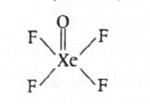
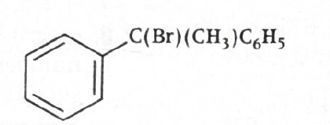
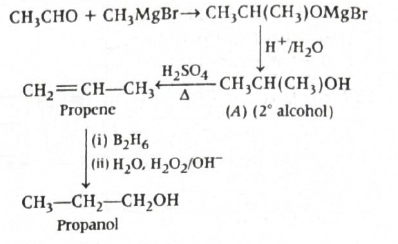

Answer: \((b)\ \frac{9x}{8}\)
Atomic Structure TTR
Solution:
For hydrogen and hydrogen-like species, radius of the \(n^{\text{th}}\) orbit is given by:
\(r_n = \frac{n^2 a_0}{Z}\)
-
Use the data for hydrogen atom
Given for hydrogen atom:
\(n = 2,\ Z = 1,\ r_n = x\ \text{pm}\)
So,
\(x = \frac{(2)^2 a_0}{1} = 4a_0\)
Therefore,
\(a_0 = \frac{x}{4}\)
-
Now find radius for \(\mathrm{He}^+\)
For \(\mathrm{He}^+\):
\(n = 3,\ Z = 2\)
Hence,
\(r_n = \frac{(3)^2 a_0}{2} = \frac{9a_0}{2}\)
Substitute \(a_0 = \frac{x}{4}\):
\(r_n = \frac{9}{2}\cdot\frac{x}{4} = \frac{9x}{8}\)
Therefore:
\(\boxed{\frac{9x}{8}}\)
Why this works:
-
In Bohr model, orbital radius depends on both principal quantum
number and nuclear charge:
\(r_n \propto \frac{n^2}{Z}\)
- As \(n\) increases, radius increases as \(n^2\).
- As nuclear charge \(Z\) increases, electron is pulled more strongly, so radius decreases.
- \(\mathrm{He}^+\) is a hydrogen-like species because it has only one electron, so the same Bohr formula applies.
JEE / NCERT takeaway:
-
For hydrogen-like atoms:
\(r_n = \frac{n^2 a_0}{Z}\)
-
For hydrogen atom, \(Z=1\), so:
\(r_n = n^2 a_0\)
- For \(\mathrm{He}^+\), \(\mathrm{Li}^{2+}\), \(\mathrm{Be}^{3+}\), etc., use the same formula with the proper value of \(Z\).
- Radius varies directly as \(n^2\) and inversely as \(Z\).
1-minute solving trick:
- Do not calculate actual \(a_0\) in pm.
-
Use ratio method directly:
\(\frac{r_2}{r_1} = \frac{n_2^2/Z_2}{n_1^2/Z_1}\)
-
Here:
\(\frac{r(\mathrm{He}^+, n=3)}{r(\mathrm{H}, n=2)} = \frac{9/2}{4/1} = \frac{9}{8}\)
-
Since \(r(\mathrm{H}, n=2)=x\), directly:
\(r(\mathrm{He}^+, n=3)=\frac{9x}{8}\)
- This is the fastest exam method.
Common mistakes to avoid:
- Forgetting that \(\mathrm{He}^+\) has \(Z=2\), not \(1\).
- Using \(r_n \propto \frac{n}{Z}\) instead of \(r_n \propto \frac{n^2}{Z}\).
- Confusing helium atom with \(\mathrm{He}^+\). Only \(\mathrm{He}^+\) is hydrogen-like.
- Multiplying by \(Z\) instead of dividing by \(Z\).
Chapter / Topic / Subtopic:
- Chapter: Structure of Atom
- Topic: Bohr model of hydrogen atom and hydrogen-like species
- Subtopic: Radius of stationary orbits
Final exam-style answer:
Using Bohr’s formula:
\(r_n = \frac{n^2 a_0}{Z}\)
For hydrogen atom, \(n=2,\ Z=1\):
\(x = \frac{(2)^2 a_0}{1} = 4a_0\)
\(\Rightarrow a_0 = \frac{x}{4}\)
For \(\mathrm{He}^+\), \(n=3,\ Z=2\):
\(r_n = \frac{(3)^2 a_0}{2} = \frac{9a_0}{2}\)
\(= \frac{9}{2}\cdot\frac{x}{4} = \frac{9x}{8}\)
\(\boxed{(b)\ \frac{9x}{8}}\)
Quick cheatsheet:
-
Bohr radius formula:
\(r_n = \frac{n^2 a_0}{Z}\)
-
Hydrogen atom:
\(Z=1\)
-
Hydrogen-like ion:
One-electron species such as \(\mathrm{He}^+\), \(\mathrm{Li}^{2+}\), \(\mathrm{Be}^{3+}\)
-
Radius trend:
\(r_n \propto n^2\)
-
Nuclear charge effect:
\(r_n \propto \frac{1}{Z}\)
-
Fast ratio method:
\(\frac{r_A}{r_B} = \frac{n_A^2/Z_A}{n_B^2/Z_B}\)
Answer: \((b)\ 4\)
Atomic Structure TTR
Solution:
We use Einstein’s photoelectric equation:
\(K_{\max} = h\nu - \phi = \frac{hc}{\lambda} - \phi\)
-
Find energy of incident photon
Given:
- \(\lambda = 310\ \mathrm{nm} = 310 \times 10^{-9}\ \mathrm{m}\)
- \(\phi = 3.55\ \mathrm{eV}\)
- \(m_e = 9 \times 10^{-31}\ \mathrm{kg}\)
Energy of incident photon:
\(E = \frac{hc}{\lambda}\)
\(E = \frac{6.626 \times 10^{-34} \times 3 \times 10^8}{310 \times 10^{-9}}\)
\(E = 6.412 \times 10^{-19}\ \mathrm{J}\)
-
Convert work function into joules
\(\phi = 3.55\ \mathrm{eV}\)
Using \(1\ \mathrm{eV} = 1.6 \times 10^{-19}\ \mathrm{J}\):
\(\phi = 3.55 \times 1.6 \times 10^{-19}\)
\(\phi = 5.68 \times 10^{-19}\ \mathrm{J}\)
-
Find maximum kinetic energy of photoelectron
\(K_{\max} = E - \phi\)
\(K_{\max} = 6.412 \times 10^{-19} - 5.68 \times 10^{-19}\)
\(K_{\max} = 0.732 \times 10^{-19}\ \mathrm{J}\)
-
Use kinetic energy formula to find velocity
\(K_{\max} = \frac{1}{2}m_ev^2\)
So,
\(v = \sqrt{\frac{2K_{\max}}{m_e}}\)
\(v = \sqrt{\frac{2 \times 0.732 \times 10^{-19}}{9 \times 10^{-31}}}\)
\(v \approx 4 \times 10^5\ \mathrm{m\,s^{-1}}\)
Hence, \(x = 4\)
Therefore:
\(\boxed{(b)\ 4}\)
Why this method works:
- In photoelectric effect, one photon transfers its energy to one electron.
- Part of this energy is used to remove the electron from the metal surface. That minimum required energy is the work function \(\phi\).
-
The remaining energy appears as maximum kinetic energy of the
emitted electron:
\(K_{\max} = h\nu - \phi\)
-
Once \(K_{\max}\) is known, velocity follows from:
\(K_{\max} = \frac{1}{2}mv^2\)
JEE / NCERT takeaway:
-
Einstein’s photoelectric equation:
\(K_{\max} = h\nu - \phi\)
-
Photon energy:
\(E = h\nu = \frac{hc}{\lambda}\)
-
Threshold frequency:
\(\nu_0 = \frac{\phi}{h}\)
-
Threshold wavelength:
\(\lambda_0 = \frac{hc}{\phi}\)
- If \(E < \phi\), no photoelectric emission occurs.
- If \(E > \phi\), electrons are emitted and the excess becomes kinetic energy.
- Maximum kinetic energy depends on frequency, not intensity.
- Intensity mainly affects the number of emitted electrons, provided frequency is above threshold.
1-minute solving trick:
-
Use the quick photon-energy relation:
\(E(\mathrm{eV}) = \frac{1240}{\lambda(\mathrm{nm})}\)
-
Here:
\(E = \frac{1240}{310} = 4\ \mathrm{eV}\)
-
So maximum kinetic energy:
\(K_{\max} = 4 - 3.55 = 0.45\ \mathrm{eV}\)
-
Convert quickly to joules:
\(0.45 \times 1.6 \times 10^{-19} = 0.72 \times 10^{-19}\ \mathrm{J}\)
-
Then:
\(v = \sqrt{\frac{2K}{m}} \approx \sqrt{\frac{1.44 \times 10^{-19}}{9 \times 10^{-31}}}\)
-
\(v \approx \sqrt{0.16 \times 10^{12}} = 0.4 \times 10^6 = 4 \times 10^5\ \mathrm{m\,s^{-1}}\)
- So directly \(x=4\).
More intuitive way to think about it:
- Wavelength \(310\ \mathrm{nm}\) corresponds to photon energy \(4\ \mathrm{eV}\), which is only slightly above the work function \(3.55\ \mathrm{eV}\).
-
So the emitted electron gets only a small leftover energy:
\(4 - 3.55 = 0.45\ \mathrm{eV}\)
- A small kinetic energy means the speed should be moderate, not extremely large.
- Among the options, \(4 \times 10^5\ \mathrm{m\,s^{-1}}\) fits well.
Common mistakes to avoid:
-
Forgetting to convert work function from \(\mathrm{eV}\) to
joules before using
\(K = \frac{1}{2}mv^2\)
- Using \(\lambda\) in nm directly in SI formula without converting to metres.
- Using total photon energy as kinetic energy, without subtracting the work function.
- Confusing threshold wavelength with incident wavelength.
- Writing \(K = mv^2\) instead of \(K = \frac{1}{2}mv^2\).
Chapter / Topic / Subtopic:
- Chapter: Structure of Atom
- Topic: Dual nature of radiation and matter / Photoelectric effect
- Subtopic: Einstein’s photoelectric equation and kinetic energy of photoelectrons
Final exam-style answer:
Given \(\lambda = 310\ \mathrm{nm}\), \(\phi = 3.55\ \mathrm{eV}\).
Energy of incident photon:
\(E = \frac{hc}{\lambda} = 6.412 \times 10^{-19}\ \mathrm{J}\)
Work function in joules:
\(\phi = 3.55 \times 1.6 \times 10^{-19} = 5.68 \times 10^{-19}\ \mathrm{J}\)
So, maximum kinetic energy:
\(K_{\max} = E - \phi = 0.732 \times 10^{-19}\ \mathrm{J}\)
Now,
\(v = \sqrt{\frac{2K_{\max}}{m_e}} = \sqrt{\frac{2 \times 0.732 \times 10^{-19}}{9 \times 10^{-31}}}\)
\(v \approx 4 \times 10^5\ \mathrm{m\,s^{-1}}\)
Hence,
\(\boxed{x=4}\)
Quick cheatsheet:
-
Photon energy:
\(E = h\nu = \frac{hc}{\lambda}\)
-
Fast eV formula:
\(E(\mathrm{eV}) = \frac{1240}{\lambda(\mathrm{nm})}\)
-
Photoelectric equation:
\(K_{\max} = h\nu - \phi\)
-
Work function:
Minimum energy needed to eject an electron
-
Threshold condition:
\(h\nu \ge \phi\)
-
Velocity relation:
\(K_{\max} = \frac{1}{2}mv^2\)
-
Unit conversion:
\(1\ \mathrm{eV} = 1.6 \times 10^{-19}\ \mathrm{J}\)
-
Threshold wavelength:
\(\lambda_0 = \frac{hc}{\phi}\)
Answer: \((c)\ \mathrm{F < N < P < Si < Na}\)
Classification of Elements and Periodicity in Properties TTR
Solution:
We need the increasing order of atomic radius, that is, from smallest to largest.
-
Use periodic trend across a period
Atomic radius generally decreases from left to right across a period because effective nuclear charge increases.
So in Period 2:
\(\mathrm{N > F}\)
Hence, in increasing order:
\(\mathrm{F < N}\)
Also in Period 3:
\(\mathrm{Na > Si > P}\)
Hence, in increasing order:
\(\mathrm{P < Si < Na}\)
-
Now combine Period 2 and Period 3 elements
Atomic radius generally increases down a group because new shells are added.
So Period 3 atoms are usually larger than comparable Period 2 atoms.
Thus:
\(\mathrm{F}\) is smaller than \(\mathrm{N}\), and both are smaller than the larger Period 3 atoms here.
Among \(\mathrm{P}\), \(\mathrm{Si}\), and \(\mathrm{Na}\):
\(\mathrm{P < Si < Na}\)
Therefore the full increasing order is:
\(\mathrm{F < N < P < Si < Na}\)
Therefore:
\(\boxed{(c)\ \mathrm{F < N < P < Si < Na}}\)
Why this method works:
-
Atomic radius depends mainly on:
\( \text{number of shells} \)
and
\( \text{effective nuclear charge} \)
- Across a period, electrons are added to the same shell, but nuclear charge increases, so the outer electrons are pulled closer.
- Down a group, a new shell is added, so atomic size increases.
-
Therefore:
Across a period: radius decreases
Down a group: radius increases
JEE / NCERT takeaway:
-
Across a period:
Atomic radius decreases from left to right.
-
Down a group:
Atomic radius increases from top to bottom.
-
Reason across a period:
Increase in effective nuclear charge with nearly same shielding.
-
Reason down a group:
Increase in number of shells and shielding effect.
- Alkali metals like \(\mathrm{Na}\) are among the largest atoms in their period.
- Halogens like \(\mathrm{F}\) are among the smallest atoms in their period.
1-minute solving trick:
- Split the elements by period first.
-
For Period 2:
\(\mathrm{F < N}\)
-
For Period 3:
\(\mathrm{P < Si < Na}\)
- Then remember that Period 3 atoms are generally larger than Period 2 atoms.
-
So directly:
\(\mathrm{F < N < P < Si < Na}\)
Common mistakes to avoid:
- Confusing increasing order with decreasing order.
- Forgetting that radius decreases across a period.
- Thinking \(\mathrm{F}\) is larger than \(\mathrm{N}\) because fluorine is “heavier”. Atomic mass is not the deciding factor here.
- Mixing Period 2 and Period 3 trends without first arranging them separately.
Chapter / Topic / Subtopic:
- Chapter: Classification of Elements and Periodicity in Properties
- Topic: Periodic trends
- Subtopic: Variation of atomic radius across a period and down a group
Final exam-style answer:
Atomic radius decreases across a period and increases down the group.
Thus:
In Period 2, \(\mathrm{F < N}\)
In Period 3, \(\mathrm{P < Si < Na}\)
Combining both:
\(\mathrm{F < N < P < Si < Na}\)
\(\boxed{(c)\ \mathrm{F < N < P < Si < Na}}\)
Quick cheatsheet:
-
Across a period:
Atomic radius decreases
-
Down a group:
Atomic radius increases
-
Main reason across a period:
Higher effective nuclear charge
-
Main reason down a group:
More shells and more shielding
-
Useful memory cue:
Left side bigger, right side smaller
-
For Period 3:
\(\mathrm{Na > Mg > Al > Si > P > S > Cl}\)
-
For Period 2:
\(\mathrm{Li > Be > B > C > N > O > F}\)
Answer: \((c)\ E,\ A\)
Classification of Elements and Periodicity in Properties TTR
Solution:
First identify the elements from their atomic numbers:
- \(A = 13 = \mathrm{Al}\)
- \(B = 11 = \mathrm{Na}\)
- \(C = 9 = \mathrm{F}\)
- \(D = 7 = \mathrm{N}\)
- \(E = 16 = \mathrm{S}\)
The question says that the ions formed have nearest inert gas configuration. So the common ions will be:
- \(\mathrm{Al^{3+}}\)
- \(\mathrm{Na^+}\)
- \(\mathrm{F^-}\)
- \(\mathrm{N^{3-}}\)
- \(\mathrm{S^{2-}}\)
-
Write the electron counts of the ions
- \(\mathrm{Al^{3+}}\): \(13 - 3 = 10\) electrons
- \(\mathrm{Na^+}\): \(11 - 1 = 10\) electrons
- \(\mathrm{F^-}\): \(9 + 1 = 10\) electrons
- \(\mathrm{N^{3-}}\): \(7 + 3 = 10\) electrons
- \(\mathrm{S^{2-}}\): \(16 + 2 = 18\) electrons
-
Compare the sizes of the \(10\)-electron species
\(\mathrm{Al^{3+}},\ \mathrm{Na^+},\ \mathrm{F^-},\ \mathrm{N^{3-}}\) are all isoelectronic because each has \(10\) electrons.
For an isoelectronic series, radius decreases as nuclear charge increases.
So among these:
\(\mathrm{N^{3-} > F^- > Na^+ > Al^{3+}}\)
This is because all have the same number of electrons, but the nucleus with more protons pulls those electrons more strongly.
-
Now compare \(\mathrm{S^{2-}}\)
\(\mathrm{S^{2-}}\) has \(18\) electrons, so it has one more shell than the \(10\)-electron ions. Therefore it is larger than all of them.
Hence the largest ion is:
\(\mathrm{S^{2-}}\)
So \(X = E\).
-
Find the smallest ion
Among the ions listed, the smallest is the one with highest nuclear charge in the \(10\)-electron isoelectronic set:
\(\mathrm{Al^{3+}}\)
So \(Y = A\).
Therefore:
\(\boxed{X = E,\ Y = A}\)
\(\boxed{(c)\ E,\ A}\)
Why this method works:
- Cations are generally smaller than their parent atoms because loss of electrons reduces electron-electron repulsion and sometimes removes the outer shell completely.
- Anions are generally larger than their parent atoms because gain of electrons increases repulsion among electrons.
- In an isoelectronic series, all species have the same number of electrons, so the main factor deciding size is nuclear charge.
- Greater nuclear charge means stronger attraction on the same electron cloud, so radius becomes smaller.
JEE / NCERT takeaway:
- Cation size: smaller than parent atom
- Anion size: larger than parent atom
- Isoelectronic rule: for same number of electrons, size decreases with increase in atomic number
-
Example:
\(\mathrm{N^{3-} > O^{2-} > F^- > Na^+ > Mg^{2+} > Al^{3+}}\)
- More shells usually means larger ionic size.
1-minute solving trick:
-
Convert letters into actual elements first:
\(A=\mathrm{Al},\ B=\mathrm{Na},\ C=\mathrm{F},\ D=\mathrm{N},\ E=\mathrm{S}\)
-
Write their nearest noble-gas ions immediately:
\(\mathrm{Al^{3+},\ Na^+,\ F^-,\ N^{3-},\ S^{2-}}\)
-
Spot the \(10\)-electron set:
\(\mathrm{Al^{3+},\ Na^+,\ F^-,\ N^{3-}}\)
-
In that set, largest is lowest \(Z\), smallest is highest \(Z\):
\(\mathrm{N^{3-} > F^- > Na^+ > Al^{3+}}\)
- Then notice \(\mathrm{S^{2-}}\) has \(18\) electrons and an extra shell, so it is the largest overall.
-
So directly:
largest \(=\mathrm{S^{2-}}\Rightarrow X=E\)
smallest \(=\mathrm{Al^{3+}}\Rightarrow Y=A\)
A quick visual memory aid:
-
\(10\)-electron series: \(\mathrm{N^{3-}}\) > \(\mathrm{F^-}\) > \(\mathrm{Na^+}\) > \(\mathrm{Al^{3+}}\) large small \(\mathrm{S^{2-}}\) has \(18\) electrons, so it is even larger than these.
Common mistakes to avoid:
- Comparing atomic sizes instead of ionic sizes.
- Forgetting the condition “nearest inert gas configuration”.
- Missing that \(\mathrm{S^{2-}}\) has \(18\) electrons, not \(10\).
- Reversing the isoelectronic trend. In an isoelectronic series, more protons means smaller size.
- Assuming all anions are automatically larger than every other ion without checking shell number and isoelectronic pattern.
Chapter / Topic / Subtopic:
- Chapter: Classification of Elements and Periodicity in Properties
- Topic: Periodic trends
- Subtopic: Ionic radius and isoelectronic species
Final exam-style answer:
\(A,\ B,\ C,\ D,\ E\) correspond to \(\mathrm{Al,\ Na,\ F,\ N,\ S}\) respectively.
Their ions with nearest inert gas configuration are:
\(\mathrm{Al^{3+},\ Na^+,\ F^-,\ N^{3-},\ S^{2-}}\)
Among \(\mathrm{Al^{3+},\ Na^+,\ F^-,\ N^{3-}}\), all are isoelectronic with \(10\) electrons, and size decreases with increase in nuclear charge:
\(\mathrm{N^{3-} > F^- > Na^+ > Al^{3+}}\)
\(\mathrm{S^{2-}}\) has \(18\) electrons and is the largest ion.
So largest ion is of element \(E\), and smallest ion is of element \(A\).
\(\boxed{(c)\ E,\ A}\)
Quick cheatsheet:
-
Cation:
smaller than atom
-
Anion:
larger than atom
-
Isoelectronic species:
same number of electrons
-
Isoelectronic trend:
higher nuclear charge \(\Rightarrow\) smaller radius
-
Important order:
\(\mathrm{N^{3-} > O^{2-} > F^- > Na^+ > Mg^{2+} > Al^{3+}}\)
-
Extra shell effect:
more shells usually \(\Rightarrow\) larger ion
Answer: \((b)\ \mathrm{SO_2,\ O_3}\)
Chemical Bonding and Molecular Structure TTR
Solution:
We need molecules in which the central atom is \(sp^2\)-hybridised and the shape is bent.
-
Check \(\mathrm{H_2O}\)
In \(\mathrm{H_2O}\), the central atom is oxygen.
Oxygen has:
- 2 bond pairs
- 2 lone pairs
So total electron pairs around central atom \(= 4\).
Hence hybridisation is:
\(sp^3\)
Its molecular shape is bent, but the hybridisation is not \(sp^2\).
So \(\mathrm{H_2O}\) does not satisfy the condition.
-
Check \(\mathrm{SO_2}\)
In \(\mathrm{SO_2}\), the central atom is sulphur.
Around sulphur, there are:
- 2 bonding regions
- 1 lone pair
So steric number \(= 3\).
Hence hybridisation is:
\(sp^2\)
Electron-pair geometry is trigonal planar, but because one position is occupied by a lone pair, the molecular shape becomes bent.
So \(\mathrm{SO_2}\) satisfies the condition.
-
Check \(\mathrm{O_3}\)
In ozone, the central oxygen has:
- 2 bonding regions
- 1 lone pair
So steric number \(= 3\).
Hence hybridisation is:
\(sp^2\)
Its electron-pair arrangement is trigonal planar, and due to one lone pair, the actual shape is bent.
So \(\mathrm{O_3}\) also satisfies the condition.
-
Check \(\mathrm{N_2O}\)
\(\mathrm{N_2O}\) is a linear molecule.
The central nitrogen is generally taken as:
\(sp\)
So it does not have bent geometry and does not satisfy the condition.
Therefore:
The correct pair is:
\(\boxed{\mathrm{SO_2,\ O_3}}\)
\(\boxed{(b)\ \mathrm{SO_2,\ O_3}}\)
Why this method works:
-
The easiest way is to use steric number, that
is:
\(\text{Steric number} = \text{bond pairs + lone pairs on central atom}\)
-
If steric number \(= 3\), the hybridisation is usually:
\(sp^2\)
-
For \(sp^2\), the electron-pair geometry is:
trigonal planar
-
If one of the three positions is occupied by a lone pair, the
molecular shape becomes:
bent
- That is exactly what happens in \(\mathrm{SO_2}\) and \(\mathrm{O_3}\).
JEE / NCERT takeaway:
-
\(sp\) hybridisation:
steric number \(= 2\), linear arrangement
-
\(sp^2\) hybridisation:
steric number \(= 3\), trigonal planar electron geometry
-
\(sp^3\) hybridisation:
steric number \(= 4\), tetrahedral electron geometry
-
Bent molecules can arise from:
- \(sp^2\) with one lone pair, such as \(\mathrm{SO_2}\), \(\mathrm{O_3}\)
- \(sp^3\) with two lone pairs, such as \(\mathrm{H_2O}\)
- So “bent shape” alone is not enough; the hybridisation must also be checked.
1-minute solving trick:
-
Immediately eliminate \(\mathrm{H_2O}\), because central oxygen
has:
2 bond pairs + 2 lone pairs \(\Rightarrow sp^3\)
- Immediately eliminate \(\mathrm{N_2O}\), because it is linear.
-
That leaves only:
\(\mathrm{SO_2}\) and \(\mathrm{O_3}\)
-
So the answer is directly:
\((b)\)
Helpful visual idea:
-
Trigonal planar electron arrangement: . / \ X X If one position is a lone pair, shape becomes bent. This is the basic idea for \(\mathrm{SO_2}\) and \(\mathrm{O_3}\).
Common mistakes to avoid:
- Thinking every bent molecule is \(sp^2\)-hybridised.
-
Forgetting that \(\mathrm{H_2O}\) is bent but has:
\(sp^3\) hybridisation
- Counting multiple bonds as multiple electron domains. In VSEPR, one double bond counts as one electron region.
- Ignoring lone pairs while deciding geometry.
Chapter / Topic / Subtopic:
- Chapter: Chemical Bonding and Molecular Structure
- Topic: VSEPR theory and hybridisation
- Subtopic: Bent geometry and \(sp^2\) hybridisation of central atom
Final exam-style answer:
In \(\mathrm{SO_2}\), the central sulphur has steric number \(3\), so it is \(sp^2\)-hybridised and the shape is bent due to one lone pair.
In \(\mathrm{O_3}\), the central oxygen also has steric number \(3\), so it is \(sp^2\)-hybridised and bent.
\(\mathrm{H_2O}\) is bent but has \(sp^3\) hybridisation, while \(\mathrm{N_2O}\) is linear.
Therefore, the correct pair is:
\(\boxed{(b)\ \mathrm{SO_2,\ O_3}}\)
Quick cheatsheet:
-
Steric number \(=2\):
\(sp\), linear
-
Steric number \(=3\):
\(sp^2\), trigonal planar electron geometry
-
Steric number \(=4\):
\(sp^3\), tetrahedral electron geometry
-
\(\mathrm{H_2O}\):
\(sp^3\), bent
-
\(\mathrm{SO_2}\):
\(sp^2\), bent
-
\(\mathrm{O_3}\):
\(sp^2\), bent
-
\(\mathrm{N_2O}\):
linear, central atom effectively \(sp\)
Answer: \((c)\ \text{III and IV only}\)
Chemical Bonding and Molecular Structure TTRSolution:
-
First compare \(O_2\) and \(O_2^{2+}\) using molecular
orbital theory
For oxygen molecule, the relevant valence MO filling is:
\(\sigma_{2s}^2\ \sigma_{2s}^{*2}\ \sigma_{2p_z}^2\ \pi_{2p_x}^2\ \pi_{2p_y}^2\ \pi_{2p_x}^{*1}\ \pi_{2p_y}^{*1}\)
So in \(O_2\), there are two electrons in antibonding \(\pi^*\) orbitals.
Bond order is:
\(\text{Bond order}=\dfrac{N_b-N_a}{2}\)
For \(O_2\):
\(\text{Bond order}=\dfrac{8-4}{2}=2\)
-
Now form \(O_2^{2+}\)
\(O_2^{2+}\) is obtained by removing two electrons from the highest occupied molecular orbitals of \(O_2\), that is, from the antibonding \(\pi^*\) orbitals.
Therefore the configuration becomes:
\(\sigma_{2s}^2\ \sigma_{2s}^{*2}\ \sigma_{2p_z}^2\ \pi_{2p_x}^2\ \pi_{2p_y}^2\)
Now antibonding electrons decrease by 2.
So bond order becomes:
\(\text{Bond order}=\dfrac{8-2}{2}=3\)
Hence bond order increases from \(2\) to \(3\).
So statement I is incorrect.
-
Magnetic property check
In \(O_2\), two unpaired electrons are present in \(\pi^*\) orbitals, so \(O_2\) is paramagnetic.
In \(O_2^{2+}\), those two electrons are removed, so all electrons become paired.
Therefore \(O_2^{2+}\) is diamagnetic.
So magnetic property does change.
Hence statement II is incorrect.
-
Bond length check
Higher bond order means stronger bond and smaller bond length.
Since bond order changes from \(2\) in \(O_2\) to \(3\) in \(O_2^{2+}\), bond length decreases.
Therefore statement III is correct.
-
Now check statement IV: \(O_2^{2-}\) and \(B_2\) have same
bond order
\(O_2^{2-}\) has two extra electrons compared to \(O_2\), so both antibonding \(\pi^*\) orbitals become fully occupied.
Thus for \(O_2^{2-}\):
\(\text{Bond order}=\dfrac{8-6}{2}=1\)
For \(B_2\), molecular orbital configuration gives:
\(\sigma_{2s}^2\ \sigma_{2s}^{*2}\ \pi_{2p_x}^1\ \pi_{2p_y}^1\)
So for \(B_2\):
\(\text{Bond order}=\dfrac{2-0}{2}=1\)
Therefore \(O_2^{2-}\) and \(B_2\) do have the same bond order.
Hence statement IV is correct.
Therefore:
\(\boxed{(c)\ \text{III and IV only}}\)
Why this works:
-
Molecular orbital theory determines bond order from bonding and
antibonding electrons:
\(\text{Bond order}=\dfrac{N_b-N_a}{2}\)
- Removing electrons from antibonding orbitals increases bond order.
-
Increasing bond order generally causes:
- bond strength to increase,
- bond length to decrease.
-
Unpaired electrons decide magnetic behaviour:
- unpaired electrons \(\Rightarrow\) paramagnetic
- all paired electrons \(\Rightarrow\) diamagnetic
NCERT / JEE theory takeaway:
- For second-period homonuclear diatomic molecules, MO theory is heavily tested in JEE and EAPCET.
-
In oxygen family questions, the most important idea is:
adding electrons to \(\pi^*\) lowers bond order, while removing electrons from \(\pi^*\) raises bond order.
-
Standard results worth memorising:
- \(O_2\): bond order \(=2\), paramagnetic
- \(O_2^+\): bond order \(=2.5\), paramagnetic
- \(O_2^-\): bond order \(=1.5\), paramagnetic
- \(O_2^{2+}\): bond order \(=3\), diamagnetic
- \(O_2^{2-}\): bond order \(=1\), paramagnetic or diamagnetic is not usually asked first; bond order is the key here
- For \(B_2\), the bond order is \(1\), and it is paramagnetic because of two unpaired electrons in the \(\pi\) orbitals.
Quick MO picture:
-
\(O_2\): \(\pi^*_{2p_x}\) ↑ \(\pi^*_{2p_y}\) ↑ \(\pi_{2p_x}\) ↑↓ \(\pi_{2p_y}\) ↑↓ \(\sigma_{2p_z}\) ↑↓ \(O_2^{2+}\): \(\pi^*_{2p_x}\) empty \(\pi^*_{2p_y}\) empty \(\pi_{2p_x}\) ↑↓ \(\pi_{2p_y}\) ↑↓ \(\sigma_{2p_z}\) ↑↓
1-minute solving trick:
- Do not build the full MO diagram every time.
-
Just remember:
- \(O_2\) has bond order \(2\) and is paramagnetic.
- Removing electrons from \(O_2\) first removes antibonding electrons.
-
So for \(O_2 \to O_2^{2+}\):
- bond order must increase, not decrease,
- magnetism must change from paramagnetic to diamagnetic,
- bond length must decrease.
-
That instantly makes:
- I false
- II false
- III true
- Then only check IV, and since \(O_2^{2-}\) has bond order \(1\) and \(B_2\) also has bond order \(1\), option \((c)\) follows.
Common mistakes to avoid:
- Thinking cation formation always decreases bond order. It depends on which orbital loses electrons.
- Forgetting that in \(O_2\), the highest occupied orbitals are antibonding \(\pi^*\) orbitals.
-
Mixing up bond order and magnetic property. They are related to
different features:
- bond order \(\Rightarrow\) bonding vs antibonding count
- magnetism \(\Rightarrow\) paired vs unpaired electrons
- Confusing \(O_2^{2+}\) with \(O_2^{2-}\). One has electrons removed, the other has electrons added.
Chapter / Topic / Subtopic:
- Chapter: Chemical Bonding and Molecular Structure
- Topic: Molecular Orbital Theory
- Subtopic: Bond order, magnetic nature, and bond length of homonuclear diatomic species
Final exam-style answer:
In \(O_2\), bond order \(=2\) and it is paramagnetic due to two unpaired electrons in antibonding \(\pi^*\) orbitals.
On conversion of \(O_2\) to \(O_2^{2+}\), two electrons are removed from antibonding \(\pi^*\) orbitals.
Therefore bond order increases from \(2\) to \(3\), so statement I is false.
Also \(O_2^{2+}\) becomes diamagnetic, so statement II is false.
Since bond order increases, bond length decreases, so statement III is true.
For \(O_2^{2-}\), bond order \(=1\), and for \(B_2\), bond order is also \(1\).
Hence statement IV is true.
\(\boxed{(c)\ \text{III and IV only}}\)
Quick cheatsheet:
-
Bond order formula:
\(\text{Bond order}=\dfrac{N_b-N_a}{2}\)
- If antibonding electrons are removed: bond order increases
- If antibonding electrons are added: bond order decreases
- Higher bond order: shorter and stronger bond
- Unpaired electrons: paramagnetic
- All electrons paired: diamagnetic
- Remember: \(O_2\) is paramagnetic, \(N_2\) is diamagnetic
Answer: \((d)\ T_{H_2}=\frac{T_{N_2}}{2}\)
States of Matter: Gases and Liquids TTRSolution:
-
Start with the RMS speed formula
\(v_{\mathrm{rms}}=\sqrt{\frac{3RT}{M}}\)
So for any gas, RMS speed depends on both temperature and molar mass.
-
Use the condition given in the question
The RMS velocity of dihydrogen is \(\sqrt{7}\) times that of dinitrogen:
\(v_{\mathrm{rms}}(H_2)=\sqrt{7}\,v_{\mathrm{rms}}(N_2)\)
Substituting \(v_{\mathrm{rms}}=\sqrt{\frac{3RT}{M}}\):
\(\sqrt{\frac{3RT_{H_2}}{M_{H_2}}}=\sqrt{7}\,\sqrt{\frac{3RT_{N_2}}{M_{N_2}}}\)
-
Now use molar masses
- \(M_{H_2}=2\)
- \(M_{N_2}=28\)
Therefore:
\(\sqrt{\frac{3RT_{H_2}}{2}}=\sqrt{7}\,\sqrt{\frac{3RT_{N_2}}{28}}\)
-
Simplify the relation
Squaring both sides:
\(\frac{3RT_{H_2}}{2}=7\cdot\frac{3RT_{N_2}}{28}\)
\(\frac{3RT_{H_2}}{2}=\frac{3RT_{N_2}}{4}\)
Cancel \(3R\) from both sides:
\(\frac{T_{H_2}}{2}=\frac{T_{N_2}}{4}\)
Hence:
\(T_{H_2}=\frac{T_{N_2}}{2}\)
Therefore:
\(\boxed{(d)\ T_{H_2}=\frac{T_{N_2}}{2}}\)
Why this method works:
-
RMS speed is given by:
\(v_{\mathrm{rms}}=\sqrt{\frac{3RT}{M}}\)
-
This means:
\(v_{\mathrm{rms}}\propto \sqrt{\frac{T}{M}}\)
- So if one gas has larger molar mass, it can still have the same or smaller RMS speed depending on temperature.
-
In such questions, never compare only masses or only
temperatures. Use the full proportionality:
\(v_{\mathrm{rms}}\propto \sqrt{\frac{T}{M}}\)
JEE / NCERT theory takeaway:
-
Important speed relations from kinetic theory:
- \(v_{\mathrm{rms}}=\sqrt{\frac{3RT}{M}}\)
- \(v_{\mathrm{avg}}=\sqrt{\frac{8RT}{\pi M}}\)
- \(v_{\mathrm{mp}}=\sqrt{\frac{2RT}{M}}\)
-
For the same gas:
\(v_{\mathrm{rms}}\propto \sqrt{T}\)
-
At the same temperature:
\(v_{\mathrm{rms}}\propto \frac{1}{\sqrt{M}}\)
-
For two gases:
\(\frac{v_1}{v_2}=\sqrt{\frac{T_1M_2}{T_2M_1}}\)
- This is the most useful direct formula for comparison questions in JEE and EAPCET.
Direct formula approach:
Using \(\frac{v_{H_2}}{v_{N_2}}=\sqrt{\frac{T_{H_2}M_{N_2}}{T_{N_2}M_{H_2}}}\), we get:
\(\sqrt{7}=\sqrt{\frac{T_{H_2}\cdot 28}{T_{N_2}\cdot 2}}\)
\(7=\frac{14T_{H_2}}{T_{N_2}}\)
\(T_{H_2}=\frac{T_{N_2}}{2}\)
1-minute solving trick:
-
Memorise:
\(\frac{v_1}{v_2}=\sqrt{\frac{T_1M_2}{T_2M_1}}\)
-
Here:
\(\frac{v_{H_2}}{v_{N_2}}=\sqrt{7}\)
-
So immediately:
\(7=\frac{T_{H_2}\cdot 28}{T_{N_2}\cdot 2}=\frac{14T_{H_2}}{T_{N_2}}\)
-
Hence:
\(T_{H_2}=\frac{T_{N_2}}{2}\)
- This avoids writing the full \(3RT/M\) expression every time.
Fast intuition:
-
\(H_2\) is much lighter than \(N_2\):
\(\frac{M_{N_2}}{M_{H_2}}=\frac{28}{2}=14\)
-
If temperature were the same, then:
\(\frac{v_{H_2}}{v_{N_2}}=\sqrt{14}\)
- But the question says the ratio is only \(\sqrt{7}\), which is smaller than \(\sqrt{14}\).
- So \(H_2\) must be at a lower temperature than \(N_2\).
- To reduce \(\sqrt{14}\) to \(\sqrt{7}\), temperature of \(H_2\) must become half of \(T_{N_2}\).
Common mistakes to avoid:
- Using molecular mass directly instead of molar mass ratio under the square root without checking the formula.
- Forgetting that RMS speed depends on \(\sqrt{T}\), not directly on \(T\).
- Assuming lighter gas always has greater speed without considering temperature.
-
Writing:
\(\frac{v_1}{v_2}=\frac{T_1M_2}{T_2M_1}\)
The square root is essential.
- Confusing \(N_2\) molar mass as \(14\) instead of \(28\).
Chapter / Topic / Subtopic:
- Chapter: States of Matter
- Topic: Kinetic theory of gases
- Subtopic: RMS speed and comparison of molecular speeds of gases
Final exam-style answer:
\(v_{\mathrm{rms}}=\sqrt{\frac{3RT}{M}}\)
Given:
\(v_{\mathrm{rms}}(H_2)=\sqrt{7}\,v_{\mathrm{rms}}(N_2)\)
So:
\(\sqrt{\frac{3RT_{H_2}}{2}}=\sqrt{7}\,\sqrt{\frac{3RT_{N_2}}{28}}\)
Squaring both sides:
\(\frac{3RT_{H_2}}{2}=7\cdot\frac{3RT_{N_2}}{28}\)
\(\frac{3RT_{H_2}}{2}=\frac{3RT_{N_2}}{4}\)
\(\frac{T_{H_2}}{2}=\frac{T_{N_2}}{4}\)
Therefore:
\(T_{H_2}=\frac{T_{N_2}}{2}\)
\(\boxed{(d)\ T_{H_2}=\frac{T_{N_2}}{2}}\)
Quick cheatsheet:
-
RMS speed:
\(v_{\mathrm{rms}}=\sqrt{\frac{3RT}{M}}\)
-
Most probable speed:
\(v_{\mathrm{mp}}=\sqrt{\frac{2RT}{M}}\)
-
Average speed:
\(v_{\mathrm{avg}}=\sqrt{\frac{8RT}{\pi M}}\)
-
Comparison formula:
\(\frac{v_1}{v_2}=\sqrt{\frac{T_1M_2}{T_2M_1}}\)
-
At same temperature:
\(\frac{v_1}{v_2}=\sqrt{\frac{M_2}{M_1}}\)
-
Speed order:
\(v_{\mathrm{rms}} > v_{\mathrm{avg}} > v_{\mathrm{mp}}\)
-
Useful masses:
\(M_{H_2}=2,\quad M_{N_2}=28,\quad M_{O_2}=32,\quad M_{CO_2}=44\)
Optional memory aid:
-
Think of gas speed as:
\(\text{speed}\sim \sqrt{\frac{\text{hotness}}{\text{heaviness}}}\)
- Hotter gas moves faster, heavier gas moves slower.
Answer: \((c)\ 0.5\ \text{L of}\ 1.0\ \text{M}\ KMnO_4\)
Solutions TTRStoichiometry TTR
Solution:
“Highest amount of solute” here means maximum mass of solute present.
We use:
\(\text{Mass of solute}=\text{Molarity}\times \text{Volume (L)} \times \text{Molar mass}\)
-
Option (a)
\(1.0\ \text{L of}\ 0.25\ \text{M}\ Na_2CO_3\)
Moles of solute \(= 0.25 \times 1.0 = 0.25\)
Mass of solute \(= 0.25 \times 106 = 26.5\ \text{g}\)
-
Option (b)
\(0.25\ \text{L of}\ 0.2\ \text{M}\ Na_2SO_4\)
Moles of solute \(= 0.2 \times 0.25 = 0.05\)
Mass of solute \(= 0.05 \times 142 = 7.1\ \text{g}\)
-
Option (c)
\(0.5\ \text{L of}\ 1.0\ \text{M}\ KMnO_4\)
Moles of solute \(= 1.0 \times 0.5 = 0.5\)
Mass of solute \(= 0.5 \times 158 = 79\ \text{g}\)
-
Option (d)
\(0.75\ \text{L of}\ 0.5\ \text{M}\ (NH_2)_2CO\)
Moles of solute \(= 0.5 \times 0.75 = 0.375\)
Mass of solute \(= 0.375 \times 60 = 22.5\ \text{g}\)
Comparison:
- (a) \(26.5\ \text{g}\)
- (b) \(7.1\ \text{g}\)
- (c) \(79\ \text{g}\)
- (d) \(22.5\ \text{g}\)
Therefore:
\(\boxed{(c)\ 0.5\ \text{L of}\ 1.0\ \text{M}\ KMnO_4}\)
Why this method works:
-
Molarity is defined as:
\(M=\frac{\text{moles of solute}}{\text{volume of solution in L}}\)
-
So:
\(\text{moles of solute}=M \times V\)
-
And mass is:
\(\text{mass}=\text{moles} \times \text{molar mass}\)
-
Combining both:
\(\text{mass of solute}=M \times V \times \text{molar mass}\)
- Since the question asks for amount of solute and molar masses are given, the intended comparison is by mass of solute.
JEE / NCERT takeaway:
-
Molarity:
\(M=\frac{n}{V}\)
-
Moles of solute:
\(n=M \times V\)
-
Mass from moles:
\(\text{mass}=n \times \text{molar mass}\)
-
Therefore:
\(\text{mass}=M \times V \times \text{molar mass}\)
- If only amount in moles is asked, compare \(M \times V\).
- If amount in grams or total solute content is intended and molar masses are supplied, compare \(M \times V \times \text{molar mass}\).
1-minute solving trick:
-
First compute \(M \times V\) quickly:
- (a) \(0.25 \times 1 = 0.25\)
- (b) \(0.2 \times 0.25 = 0.05\)
- (c) \(1.0 \times 0.5 = 0.5\)
- (d) \(0.5 \times 0.75 = 0.375\)
- Option (c) already has the highest number of moles.
-
Its molar mass is also the largest among the options:
\(158\)
- So without full calculation, option (c) must give the highest mass of solute.
Fast intuitive check:
-
Option (c) has:
\(1.0\ \text{M}\)
which is the highest concentration. -
It also has a decent volume:
\(0.5\ \text{L}\)
-
So it gives:
\(0.5\ \text{mol}\)
which is already the largest mole amount. - Since \(KMnO_4\) also has high molar mass, it will definitely give the highest solute mass.
Common mistakes to avoid:
- Comparing only molarity and ignoring volume.
- Comparing only \(M \times V\) when the question is effectively asking for mass and molar masses are given.
-
Forgetting to convert the idea properly:
\(\text{moles}=M \times V\)
-
Multiplying incorrectly in decimal values like:
\(0.5 \times 0.75 = 0.375\)
- Missing the clue that molar masses are intentionally provided.
Chapter / Topic / Subtopic:
- Chapter: Solutions
- Topic: Concentration terms
- Subtopic: Molarity and calculation of amount / mass of solute
Final exam-style answer:
Mass of solute \(=\) Molarity \(\times\) Volume \((\text{L}) \times\) Molar mass
For (a): \(0.25 \times 1 \times 106 = 26.5\ \text{g}\)
For (b): \(0.2 \times 0.25 \times 142 = 7.1\ \text{g}\)
For (c): \(1.0 \times 0.5 \times 158 = 79\ \text{g}\)
For (d): \(0.5 \times 0.75 \times 60 = 22.5\ \text{g}\)
Highest mass of solute is in option (c).
\(\boxed{(c)\ 0.5\ \text{L of}\ 1.0\ \text{M}\ KMnO_4}\)
Quick cheatsheet:
-
Molarity:
\(M=\frac{n}{V}\)
-
Moles of solute:
\(n=M \times V\)
-
Mass of solute:
\(\text{mass}=n \times \text{molar mass}\)
-
Combined formula:
\(\text{mass}=M \times V \times \text{molar mass}\)
- If molar mass is not needed: compare \(M \times V\)
- If grams are asked: compare \(M \times V \times \text{molar mass}\)
Answer: \((b)\ -496\ \text{kJ}\)
Thermodynamics TTRSolution:
Required reaction:
\(CH_4(g) + O_2(g) \longrightarrow C(s) + 2H_2O(l)\)
We use Hess’s law: if equations are added, their enthalpy changes are also added.
-
Write the given useful equation
\(CH_4(g) + 2O_2(g) \longrightarrow CO_2(g) + 2H_2O(l)\)
\(\Delta H^\circ = -890\ \text{kJ}\)
-
Reverse the carbon combustion equation
Given:
\(C(s) + O_2(g) \longrightarrow CO_2(g)\)
\(\Delta H^\circ = -394\ \text{kJ}\)
On reversing:
\(CO_2(g) \longrightarrow C(s) + O_2(g)\)
\(\Delta H^\circ = +394\ \text{kJ}\)
-
Add the two equations
\(CH_4(g) + 2O_2(g) \longrightarrow CO_2(g) + 2H_2O(l)\)
\(CO_2(g) \longrightarrow C(s) + O_2(g)\)
After cancellation of \(CO_2(g)\):
\(CH_4(g) + 2O_2(g) \longrightarrow C(s) + 2H_2O(l) + O_2(g)\)
Cancel one \(O_2(g)\) from both sides:
\(CH_4(g) + O_2(g) \longrightarrow C(s) + 2H_2O(l)\)
-
Add enthalpy changes
\(\Delta H^\circ = -890 + 394\)
\(\Delta H^\circ = -496\ \text{kJ}\)
Therefore:
\(\boxed{(b)\ -496\ \text{kJ}}\)
Why this method works:
- Enthalpy is a state function, so it depends only on initial and final states, not on the path.
- That is why we can manipulate chemical equations algebraically and add their \(\Delta H\) values accordingly.
- If an equation is reversed, the sign of \(\Delta H\) changes.
- If an equation is multiplied by a number, \(\Delta H\) is multiplied by the same number.
JEE / NCERT takeaway:
- Hess’s law: total enthalpy change for a reaction is the same whether it occurs in one step or several steps.
-
For combustion and formation problems, the fastest approach is
usually to:
- identify the target reaction,
- reverse or multiply suitable given equations,
- cancel common species carefully.
- Standard enthalpy of formation of an element in its standard state is taken as zero, but here direct equation manipulation is enough.
1-minute solving trick:
- Notice that the target reaction is almost the methane combustion equation, except that \(CO_2\) is replaced by \(C\).
-
So mentally do:
\(\text{methane combustion} + \text{reverse of } \big(C + O_2 \to CO_2\big)\)
-
That gives immediately:
\(-890 + 394 = -496\ \text{kJ}\)
- The first given equation involving \(H_2\) and \(H_2O\) is extra here; you do not actually need it.
Common mistakes to avoid:
- Forgetting to change \(\Delta H\) sign when reversing \(C(s) + O_2(g) \to CO_2(g)\).
- Adding equations without cancelling common species like \(CO_2\) and \(O_2\).
- Using all given equations compulsorily. In this question, one of them is not needed.
- Missing the fact that the final answer stays negative.
Chapter / Topic / Subtopic:
- Chapter: Thermodynamics
- Topic: Enthalpy change of reaction
- Subtopic: Hess’s law and enthalpy calculation by equation manipulation
Final exam-style answer:
\(CH_4(g) + 2O_2(g) \longrightarrow CO_2(g) + 2H_2O(l)\), \(\Delta H^\circ = -890\ \text{kJ}\)
Reverse:
\(C(s) + O_2(g) \longrightarrow CO_2(g)\), \(\Delta H^\circ = -394\ \text{kJ}\)
to get
\(CO_2(g) \longrightarrow C(s) + O_2(g)\), \(\Delta H^\circ = +394\ \text{kJ}\)
Adding:
\(CH_4(g) + O_2(g) \longrightarrow C(s) + 2H_2O(l)\)
\(\Delta H^\circ = -890 + 394 = -496\ \text{kJ}\)
\(\boxed{(b)\ -496\ \text{kJ}}\)
Quick cheatsheet:
- If equation is reversed: \(\Delta H\) sign changes.
- If equation is multiplied by \(n\): \(\Delta H\) also becomes \(n\Delta H\).
- On adding equations, cancel identical species on both sides.
- For Hess’s law questions, always compare target reaction with the given reactions first.
Answer: \((c)\ \alpha=\left(\frac{K_p/p}{4+\frac{K_p}{p}}\right)^{1/2}\)
Chemical Equilibrium and Acids-Bases TTRSolution:
Given equilibrium:
\(N_2O_4(g) \rightleftharpoons 2NO_2(g)\)
-
Assume 1 mole of \(N_2O_4\) initially
Let the degree of dissociation be \(\alpha\).
- Initial moles of \(N_2O_4 = 1\)
- Initial moles of \(NO_2 = 0\)
At equilibrium:
- \(N_2O_4 = 1-\alpha\)
- \(NO_2 = 2\alpha\)
Total moles at equilibrium:
\((1-\alpha)+2\alpha=1+\alpha\)
-
Write partial pressures in terms of total pressure
\(p\)
Partial pressure \(=\) mole fraction \(\times\) total pressure.
So:
\(p_{N_2O_4}=\frac{1-\alpha}{1+\alpha}\,p\)
\(p_{NO_2}=\frac{2\alpha}{1+\alpha}\,p\)
-
Apply the expression for \(K_p\)
For the reaction \(N_2O_4(g) \rightleftharpoons 2NO_2(g)\):
\(K_p=\frac{(p_{NO_2})^2}{p_{N_2O_4}}\)
Substitute the partial pressures:
\(K_p=\frac{\left(\frac{2\alpha}{1+\alpha}p\right)^2}{\left(\frac{1-\alpha}{1+\alpha}p\right)}\)
\(K_p=\frac{4\alpha^2p^2}{(1+\alpha)^2}\cdot\frac{1+\alpha}{(1-\alpha)p}\)
\(K_p=\frac{4\alpha^2p}{(1+\alpha)(1-\alpha)}\)
\(K_p=\frac{4\alpha^2p}{1-\alpha^2}\)
-
Rearrange to get \(\alpha\)
\(K_p(1-\alpha^2)=4\alpha^2p\)
\(K_p-K_p\alpha^2=4\alpha^2p\)
\(K_p=\alpha^2(K_p+4p)\)
\(\alpha^2=\frac{K_p}{K_p+4p}\)
Divide numerator and denominator by \(p\):
\(\alpha^2=\frac{K_p/p}{\frac{K_p}{p}+4}\)
Therefore:
\(\alpha=\left(\frac{K_p/p}{4+\frac{K_p}{p}}\right)^{1/2}\)
Therefore:
\(\boxed{(c)\ \alpha=\left(\frac{K_p/p}{4+\frac{K_p}{p}}\right)^{1/2}}\)
Why this method works:
- Degree of dissociation \(\alpha\) tells us what fraction of the initial reactant has dissociated.
- Once equilibrium moles are known, partial pressures follow from mole fractions.
- Then \(K_p\) is written directly using equilibrium partial pressures.
- This is the standard NCERT/JEE approach for gaseous dissociation equilibria.
JEE / NCERT takeaway:
-
For a gaseous equilibrium:
\(K_p=\frac{\text{product of partial pressures of products}}{\text{product of partial pressures of reactants}}\)
-
Partial pressure of a gas:
\(p_i=x_i\,p_{\text{total}}\)
-
For dissociation of the type:
\(A(g)\rightleftharpoons nB(g)\)
total moles increase if dissociation occurs. -
For \(N_2O_4(g)\rightleftharpoons 2NO_2(g)\), increase in moles
means:
- low pressure favours dissociation,
- high pressure suppresses dissociation.
- Here \(\Delta n = 2-1 = 1\), so \(K_p\) naturally gets linked with total pressure \(p\).
Useful equilibrium table:
-
\(N_2O_4(g) \rightleftharpoons 2NO_2(g)\) Initial 1 0 Change \(-\alpha\) \(+2\alpha\) Equilibrium \(1-\alpha\) \(2\alpha\) Total moles at equilibrium = \(1+\alpha\)
1-minute solving trick:
- For \(N_2O_4 \rightleftharpoons 2NO_2\), start with \(1\) mole.
-
Immediately write equilibrium moles as:
\(1-\alpha,\ 2\alpha,\ 1+\alpha\)
-
Then partial pressures become:
\(p_{N_2O_4}=\frac{1-\alpha}{1+\alpha}p,\quad p_{NO_2}=\frac{2\alpha}{1+\alpha}p\)
-
Substituting into \(K_p=\frac{(p_{NO_2})^2}{p_{N_2O_4}}\) always
gives:
\(K_p=\frac{4\alpha^2p}{1-\alpha^2}\)
-
From this, solve directly:
\(\alpha^2=\frac{K_p/p}{4+K_p/p}\)
- Since the options involve square root, the correct answer must contain \(\sqrt{\phantom{x}}\), so that already eliminates (a) and (b).
Intuitive check:
- \(\alpha\) must lie between \(0\) and \(1\).
- The expression in option (c) always stays physically sensible.
- If pressure \(p\) increases, \(\frac{K_p}{p}\) decreases, so \(\alpha\) decreases.
- That matches Le Chatelier’s principle, because higher pressure opposes the side with more gas moles.
Common mistakes to avoid:
- Using equilibrium moles directly as partial pressures without dividing by total moles.
- Forgetting total moles at equilibrium is \(1+\alpha\), not \(1+2\alpha\).
- Missing the square while substituting \((p_{NO_2})^2\).
- Forgetting that \(K_p\) depends on partial pressures, not mole numbers directly.
- Dropping the square root at the end and writing \(\alpha\) instead of \(\alpha^2\).
Chapter / Topic / Subtopic:
- Chapter: Equilibrium
- Topic: Chemical equilibrium in gaseous systems
- Subtopic: Degree of dissociation and relation between \(\alpha\), \(K_p\), and total pressure
Final exam-style answer:
For \(N_2O_4(g)\rightleftharpoons 2NO_2(g)\), let initial moles of \(N_2O_4\) be \(1\) and degree of dissociation be \(\alpha\).
Then at equilibrium:
\(N_2O_4=1-\alpha,\quad NO_2=2\alpha\)
Total moles \(=1+\alpha\)
Hence:
\(p_{N_2O_4}=\frac{1-\alpha}{1+\alpha}p,\quad p_{NO_2}=\frac{2\alpha}{1+\alpha}p\)
Now:
\(K_p=\frac{(p_{NO_2})^2}{p_{N_2O_4}}\)
\(K_p=\frac{\left(\frac{2\alpha}{1+\alpha}p\right)^2}{\left(\frac{1-\alpha}{1+\alpha}p\right)}\)
\(K_p=\frac{4\alpha^2p}{1-\alpha^2}\)
\(K_p(1-\alpha^2)=4\alpha^2p\)
\(K_p=\alpha^2(K_p+4p)\)
\(\alpha^2=\frac{K_p}{K_p+4p}=\frac{K_p/p}{4+\frac{K_p}{p}}\)
Therefore:
\(\alpha=\left(\frac{K_p/p}{4+\frac{K_p}{p}}\right)^{1/2}\)
\(\boxed{(c)}\)
Quick cheatsheet:
- Partial pressure: \(p_i=x_i p\)
-
For \(A \rightleftharpoons 2B\) with initial 1 mole of
\(A\):
equilibrium moles \(=1-\alpha,\ 2\alpha\)
- Total moles: \(1+\alpha\)
-
Key formula here:
\(K_p=\frac{4\alpha^2p}{1-\alpha^2}\)
-
Hence:
\(\alpha=\left(\frac{K_p/p}{4+\frac{K_p}{p}}\right)^{1/2}\)
- Pressure effect: higher \(p \Rightarrow\) lower dissociation for this reaction
Answer: \((a)\ \mathrm{LiAlH_4,\ H_2O}\)
Hydrogen and its Compounds TTRStoichiometry TTR
Solution:
We need the compound \(X\) in which hydrogen has oxidation state \(-1\), and the compound \(Y\) in which hydrogen has oxidation state \(+1\).
-
Recall the basic oxidation-state rule for hydrogen
- In most compounds, hydrogen has oxidation state \(+1\).
- In metal hydrides, hydrogen has oxidation state \(-1\).
This is the key NCERT/JEE idea being tested.
-
Check \(\mathrm{LiAlH_4}\)
Let oxidation state of each hydrogen be \(x\).
For neutral \(\mathrm{LiAlH_4}\):
\((+1) + (+3) + 4x = 0\)
\(4 + 4x = 0\)
\(x = -1\)
So in \(\mathrm{LiAlH_4}\), hydrogen is \(-1\).
-
Check \(\mathrm{H_2O}\)
Let oxidation state of hydrogen be \(x\).
For neutral \(\mathrm{H_2O}\):
\(2x + (-2) = 0\)
\(2x = 2\)
\(x = +1\)
So in \(\mathrm{H_2O}\), hydrogen is \(+1\).
-
Therefore
\(X = \mathrm{LiAlH_4}\) and \(Y = \mathrm{H_2O}\)
Hence the correct option is \((a)\).
Why the other options fail:
-
\((b)\ \mathrm{NH_3,\ NaH}\)
In \(\mathrm{NH_3}\), hydrogen is \(+1\), not \(-1\).
In \(\mathrm{NaH}\), hydrogen is \(-1\), not \(+1\).
So the order is wrong.
-
\((c)\ \mathrm{CH_4,\ H_2O}\)
In \(\mathrm{CH_4}\), hydrogen is \(+1\), because hydrogen attached to a non-metal generally has \(+1\).
So \(X\) is not correct.
-
\((d)\ \mathrm{H_2S,\ NaBH_4}\)
In \(\mathrm{H_2S}\), hydrogen is \(+1\), not \(-1\).
In \(\mathrm{NaBH_4}\), hydrogen is \(-1\), not \(+1\).
Again the order is wrong.
JEE / NCERT takeaway:
-
Hydrogen usually shows two common oxidation states:
\(+1\) and \(-1\)
-
Hydrogen is \(+1\) when bonded to more
electronegative non-metals such as:
\(\mathrm{O,\ N,\ S,\ Cl}\)
Examples: \(\mathrm{H_2O,\ NH_3,\ HCl,\ H_2S}\)
-
Hydrogen is \(-1\) in ionic or covalent
hydrides of electropositive elements / metals.
Examples: \(\mathrm{NaH,\ CaH_2,\ LiAlH_4,\ NaBH_4}\)
-
In oxidation-number questions, first identify:
whether hydrogen is bonded to a metal/electropositive element or to a non-metal.
1-minute solving trick:
- Do not start calculating every option in full.
-
First use the shortcut:
Metal hydride \(\Rightarrow\) \(H = -1\)
Non-metal hydride / common covalent compound \(\Rightarrow\) \(H = +1\)
-
So immediately:
\(\mathrm{LiAlH_4}\) behaves as a hydride \(\Rightarrow H = -1\)
\(\mathrm{H_2O}\) is a normal covalent compound \(\Rightarrow H = +1\)
- Hence \((a)\) can be identified very quickly.
- Use full oxidation-number calculation only to confirm if needed.
Chapter / Topic / Subtopic:
- Chapter: Classification of Elements and Periodicity in Properties / Basic Principles of Chemistry
- Topic: Oxidation number
- Subtopic: Oxidation state of hydrogen in hydrides and covalent compounds
Final exam-style answer:
In metal hydrides, hydrogen has oxidation state \(-1\), while in most covalent compounds it has oxidation state \(+1\).
For \(\mathrm{LiAlH_4}\):
\((+1) + (+3) + 4x = 0\)
\(x = -1\)
For \(\mathrm{H_2O}\):
\(2x + (-2) = 0\)
\(x = +1\)
Therefore, \(X = \mathrm{LiAlH_4}\) and \(Y = \mathrm{H_2O}\).
\(\boxed{(a)\ \mathrm{LiAlH_4,\ H_2O}}\)
Quick cheatsheet:
-
Hydrogen in most compounds:
\(+1\)
-
Hydrogen in metal hydrides:
\(-1\)
-
Examples with \(H = +1\):
\(\mathrm{H_2O,\ NH_3,\ CH_4,\ H_2S}\)
-
Examples with \(H = -1\):
\(\mathrm{NaH,\ CaH_2,\ LiAlH_4,\ NaBH_4}\)
-
Fast recognition rule:
\(H\) with non-metals \(\Rightarrow +1\)
\(H\) with electropositive elements / hydrides \(\Rightarrow -1\)
Answer: \((b)\ \mathrm{A\!-\!IV,\ B\!-\!I,\ C\!-\!III,\ D\!-\!II}\)
s-Block Elements TTRChemistry in Everyday Life TTR
Solution:
We match each chemical with its most common use.
-
\(\mathrm{KOH}\)
\(\mathrm{KOH}\) is potassium hydroxide.
It is used as an absorbent for \(\mathrm{CO_2}\).
So:
\(\mathrm{A \rightarrow IV}\)
-
\(\mathrm{Na(l)}\)
Liquid sodium is used as a coolant in some nuclear reactors because it has high thermal conductivity and can transfer heat efficiently.
So:
\(\mathrm{B \rightarrow I}\)
-
\(\mathrm{Li}\)
Lithium is widely used in electrochemical cells, especially lithium batteries, because of its very high electrode potential and low atomic mass.
So:
\(\mathrm{C \rightarrow III}\)
-
\(\mathrm{Mg(OH)_2}\)
\(\mathrm{Mg(OH)_2}\), magnesium hydroxide, is used as an antacid.
It neutralizes excess acid in the stomach.
So:
\(\mathrm{D \rightarrow II}\)
Therefore:
\(\mathrm{A\!-\!IV,\ B\!-\!I,\ C\!-\!III,\ D\!-\!II}\)
Hence the correct option is \((b)\).
JEE / NCERT takeaway:
-
\(\mathrm{KOH}\) and \(\mathrm{NaOH}\) are
strong bases.
Strong alkalis can absorb acidic gases like \(\mathrm{CO_2}\).
-
Liquid sodium is used as a coolant.
Reason: it has good heat-transfer ability and a high boiling point.
-
Lithium is important in batteries /
electrochemical cells.
Its small size and very negative electrode potential make it highly useful.
-
\(\mathrm{Mg(OH)_2}\) is a mild base used as an
antacid.
It neutralizes excess \(\mathrm{HCl}\) in the stomach:
\(\mathrm{Mg(OH)_2 + 2HCl \rightarrow MgCl_2 + 2H_2O}\)
Why each match is intuitive:
-
Antacid must be something that can safely
neutralize acid.
\(\mathrm{Mg(OH)_2}\) fits this immediately.
- Electrochemical cells strongly suggests lithium because of lithium batteries.
- Coolant points to liquid sodium, a standard use in metallurgy / nuclear chemistry context.
- Absorbent for \(\mathrm{CO_2}\) is then matched with \(\mathrm{KOH}\).
1-minute solving trick:
-
First identify the two easiest matches:
\(\mathrm{Mg(OH)_2 \rightarrow Antacid}\)
\(\mathrm{Li \rightarrow Electrochemical\ cells}\)
-
Then:
\(\mathrm{Na(l) \rightarrow Coolant}\)
-
The remaining one is automatic:
\(\mathrm{KOH \rightarrow Absorbent\ for\ CO_2}\)
-
So without checking every option fully, you reach:
\(\mathrm{A\!-\!IV,\ B\!-\!I,\ C\!-\!III,\ D\!-\!II}\)
Chapter / Topic / Subtopic:
- Chapter: \(s\)-Block Elements
- Topic: Important compounds and uses of alkali and alkaline earth metals
- Subtopic: Uses of \(\mathrm{KOH}\), liquid sodium, lithium, and \(\mathrm{Mg(OH)_2}\)
Final exam-style answer:
\(\mathrm{KOH}\) is used as an absorbent for \(\mathrm{CO_2}\), liquid sodium is used as a coolant, lithium is used in electrochemical cells, and \(\mathrm{Mg(OH)_2}\) is used as an antacid.
Thus:
\(\mathrm{A\!-\!IV,\ B\!-\!I,\ C\!-\!III,\ D\!-\!II}\)
\(\boxed{(b)}\)
Quick cheatsheet:
-
\(\mathrm{KOH}\):
Strong base; absorbs acidic gas \(\mathrm{CO_2}\)
-
\(\mathrm{Na(l)}\):
Coolant
-
\(\mathrm{Li}\):
Electrochemical cells / batteries
-
\(\mathrm{Mg(OH)_2}\):
Antacid
-
Fast memory hook:
\(\mathrm{Li \rightarrow battery,\ Na(l) \rightarrow coolant,\ Mg(OH)_2 \rightarrow antacid,\ KOH \rightarrow CO_2\ absorber}\)
Answer: \((b)\ X\) is diamagnetic and \(Y\) is paramagnetic in nature
s-Block Elements TTRChemical Bonding and Molecular Structure TTR
Solution:
When alkali metals burn in excess oxygen, the nature of oxide formed depends on the size of the metal cation.
-
Identify the compounds \(X\) and \(Y\)
Sodium in excess oxygen forms sodium peroxide:
\(\mathrm{2Na(s) + O_2(g) \rightarrow Na_2O_2(s)}\)
So:
\(X = \mathrm{Na_2O_2}\)
Potassium in excess oxygen forms potassium superoxide:
\(\mathrm{K(s) + O_2(g) \rightarrow KO_2(s)}\)
So:
\(Y = \mathrm{KO_2}\)
-
Now determine the magnetic nature of \(X =
\mathrm{Na_2O_2}\)
\(\mathrm{Na_2O_2}\) contains the peroxide ion \(\mathrm{O_2^{2-}}\).
In peroxide ion, all electrons are paired.
Therefore:
\(\mathrm{O_2^{2-}}\) is diamagnetic.
Hence:
\(X\) is diamagnetic.
-
Now determine the magnetic nature of \(Y =
\mathrm{KO_2}\)
\(\mathrm{KO_2}\) contains the superoxide ion \(\mathrm{O_2^-}\).
In superoxide ion, one electron remains unpaired.
Therefore:
\(\mathrm{O_2^-}\) is paramagnetic.
Hence:
\(Y\) is paramagnetic.
-
Final conclusion
\(X\) is diamagnetic and \(Y\) is paramagnetic.
So the correct option is \((b)\).
Useful electron-species comparison:
- \(\mathrm{O_2}\): paramagnetic
- \(\mathrm{O_2^-}\) (superoxide): paramagnetic
- \(\mathrm{O_2^{2-}}\) (peroxide): diamagnetic
JEE / NCERT takeaway:
-
In alkali metals, the product formed with oxygen changes down
the group:
\(\mathrm{Li \rightarrow oxide}\)
\(\mathrm{Na \rightarrow peroxide}\)
\(\mathrm{K,\ Rb,\ Cs \rightarrow superoxide}\)
-
This trend is due to increasing cation size down the group.
Larger cations stabilize larger anions like \(\mathrm{O_2^-}\).
-
Peroxide ion:
\(\mathrm{O_2^{2-}}\)
All electrons are paired, so it is diamagnetic.
-
Superoxide ion:
\(\mathrm{O_2^-}\)
Contains one unpaired electron, so it is paramagnetic.
-
Magnetic behavior depends on unpaired electrons:
unpaired electrons \(\Rightarrow\) paramagnetic
all electrons paired \(\Rightarrow\) diamagnetic
Why sodium and potassium behave differently:
- Sodium is smaller than potassium.
- \(\mathrm{Na^+}\) stabilizes peroxide ion better than superoxide ion.
- \(\mathrm{K^+}\), being larger, can stabilize the larger superoxide ion \(\mathrm{O_2^-}\).
-
So in excess oxygen:
\(\mathrm{Na \rightarrow Na_2O_2}\)
\(\mathrm{K \rightarrow KO_2}\)
1-minute solving trick:
-
Memorize the oxygen products of alkali metals:
\(\mathrm{Li \rightarrow Li_2O}\)
\(\mathrm{Na \rightarrow Na_2O_2}\)
\(\mathrm{K \rightarrow KO_2}\)
-
Then memorize just one magnetic fact:
\(\mathrm{O_2^{2-}}\) is diamagnetic
\(\mathrm{O_2^-}\) is paramagnetic
-
So immediately:
\(\mathrm{Na_2O_2 \Rightarrow diamagnetic}\)
\(\mathrm{KO_2 \Rightarrow paramagnetic}\)
- That gives option \((b)\) almost instantly.
Quick intuitive memory hook:
-
Peroxide means more reduced oxygen:
\(\mathrm{O_2^{2-}}\)
electrons become fully paired \(\Rightarrow\) diamagnetic
-
Superoxide:
\(\mathrm{O_2^-}\)
one electron remains unpaired \(\Rightarrow\) paramagnetic
Chapter / Topic / Subtopic:
- Chapter: \(s\)-Block Elements
- Topic: Reaction of alkali metals with oxygen
- Subtopic: Formation and magnetic nature of peroxide and superoxide
Final exam-style answer:
In excess oxygen, sodium forms peroxide and potassium forms superoxide.
\(\mathrm{2Na + O_2 \rightarrow Na_2O_2}\)
\(\mathrm{K + O_2 \rightarrow KO_2}\)
\(\mathrm{Na_2O_2}\) contains peroxide ion \(\mathrm{O_2^{2-}}\), which has all electrons paired and is therefore diamagnetic.
\(\mathrm{KO_2}\) contains superoxide ion \(\mathrm{O_2^-}\), which has one unpaired electron and is therefore paramagnetic.
Hence, \(X\) is diamagnetic and \(Y\) is paramagnetic.
\(\boxed{(b)}\)
Quick cheatsheet:
-
With oxygen:
\(\mathrm{Li \rightarrow oxide}\)
\(\mathrm{Na \rightarrow peroxide}\)
\(\mathrm{K \rightarrow superoxide}\)
-
Peroxide ion:
\(\mathrm{O_2^{2-}}\)
Diamagnetic
-
Superoxide ion:
\(\mathrm{O_2^-}\)
Paramagnetic
-
Magnetic rule:
paired electrons \(\Rightarrow\) diamagnetic
unpaired electrons \(\Rightarrow\) paramagnetic
-
Fast answer chain:
\(\mathrm{Na \rightarrow Na_2O_2 \rightarrow diamagnetic}\)
\(\mathrm{K \rightarrow KO_2 \rightarrow paramagnetic}\)
Answer: \((d)\ \mathrm{Tl > In > Al > Ga}\)
p-Block Elements – Group 13 (Boron Family) TTRClassification of Elements and Periodicity in Properties TTR
Solution:
We need the correct order of atomic radii of group 13 elements.
-
First recall the general trend down a group
Atomic radius usually increases down the group because a new shell is added at each step.
So at first glance, we may expect:
\(\mathrm{Al < Ga < In < Tl}\)
or in decreasing order:
\(\mathrm{Tl > In > Ga > Al}\)
But group 13 shows an important exception between \(\mathrm{Al}\) and \(\mathrm{Ga}\).
-
Why is \(\mathrm{Ga}\) smaller than expected?
Gallium comes after the \(3d\)-series.
The \(d\)-electrons have poor shielding effect.
Because of this, the outer electrons in \(\mathrm{Ga}\) feel a higher effective nuclear charge than expected, so the size contracts.
Therefore:
\(\mathrm{Ga < Al}\)
-
Now compare the remaining elements
After that, size increases from \(\mathrm{Ga}\) to \(\mathrm{In}\) due to addition of a new shell.
Thallium is still larger than indium overall, though the increase is not as large as a simple down-the-group trend might suggest because of poor shielding by inner electrons.
So the decreasing order becomes:
\(\mathrm{Tl > In > Al > Ga}\)
-
Hence
The correct option is \((d)\).
Therefore:
\(\boxed{\mathrm{Tl > In > Al > Ga}}\)
JEE / NCERT takeaway:
- Down a group, atomic radius generally increases because of addition of shells.
- This simple trend can be disturbed when inner electrons shield poorly.
- \(d\)-electrons have poor shielding power.
- Because of poor shielding by \(d\)-electrons, \(\mathrm{Ga}\) has a smaller radius than expected.
-
Therefore in group 13:
\(\mathrm{Ga < Al}\)
- This is a standard periodicity exception often asked in one-mark questions.
Why this exception matters in group 13:
- \(\mathrm{Al}\) has no filled \(d\)-subshell before it.
- \(\mathrm{Ga}\) comes after the \(3d\)-series.
- Those \(3d\)-electrons do not shield effectively.
- So the valence electrons of \(\mathrm{Ga}\) are pulled inward more strongly.
- Hence \(\mathrm{Ga}\) becomes slightly smaller than \(\mathrm{Al}\), even though it lies below it.
1-minute solving trick:
-
Memorize just one special fact:
\(\mathrm{Ga < Al}\)
-
Then apply the normal down-group increase for the rest:
\(\mathrm{Tl > In}\)
-
Combine both:
\(\mathrm{Tl > In > Al > Ga}\)
- That gives option \((d)\) immediately.
Chapter / Topic / Subtopic:
- Chapter: Classification of Elements and Periodicity in Properties
- Topic: Periodic trends in atomic size
- Subtopic: Exception in group 13 atomic radii due to poor shielding by \(d\)-electrons
Final exam-style answer:
Normally atomic radius increases down the group due to addition of new shells. However, \(\mathrm{Ga}\) has smaller radius than \(\mathrm{Al}\) because of poor shielding effect of \(d\)-electrons, which increases the effective nuclear charge on its outer electrons.
Hence the correct decreasing order of atomic radii is:
\(\mathrm{Tl > In > Al > Ga}\)
\(\boxed{(d)}\)
Quick cheatsheet:
-
General rule:
Atomic radius increases down a group.
-
Important exception:
\(\mathrm{Ga < Al}\)
-
Reason:
Poor shielding by \(d\)-electrons
-
Correct group 13 order:
\(\mathrm{Tl > In > Al > Ga}\)
-
Fast memory hook:
Everything grows down the group, but \(\mathrm{Ga}\) gets pulled in.
Answer: \((c)\ 5\)
p-Block Elements – Group 13 (Boron Family) TTRp-Block Elements – Group 14 (Carbon Family) TTR
Solution:
We have to count the amphoteric oxides in the list:
\(\mathrm{CO,\ B_2O_3,\ SnO_2,\ PbO_2,\ Ga_2O_3,\ SnO,\ PbO,\ CO_2}\)
-
Recall the classification of oxides
- Acidic oxides react with bases.
- Basic oxides react with acids.
- Amphoteric oxides react with both acids and bases.
- Neutral oxides generally show neither acidic nor basic character.
-
Identify each oxide in the given list
- \(\mathrm{CO}\): neutral oxide
- \(\mathrm{B_2O_3}\): acidic oxide
- \(\mathrm{SnO_2}\): amphoteric oxide
- \(\mathrm{PbO_2}\): amphoteric oxide
- \(\mathrm{Ga_2O_3}\): amphoteric oxide
- \(\mathrm{SnO}\): amphoteric oxide
- \(\mathrm{PbO}\): amphoteric oxide
- \(\mathrm{CO_2}\): acidic oxide
-
Now count the amphoteric oxides
The amphoteric oxides are:
\(\mathrm{SnO,\ PbO,\ SnO_2,\ PbO_2,\ Ga_2O_3}\)
Total number \(= 5\)
Therefore:
\(\boxed{(c)\ 5}\)
JEE / NCERT takeaway:
-
Amphoteric oxides are very important memory-based
compounds.
Common examples repeatedly used in NCERT/JEE are:
\(\mathrm{BeO,\ Al_2O_3,\ ZnO,\ SnO,\ SnO_2,\ PbO,\ PbO_2,\ Ga_2O_3,\ Cr_2O_3}\)
-
Acidic oxides are usually oxides of non-metals
in higher oxidation states.
Examples: \(\mathrm{CO_2,\ SO_2,\ SO_3,\ P_2O_5,\ B_2O_3}\)
-
Neutral oxides often include:
\(\mathrm{CO,\ NO,\ N_2O}\)
-
Borderline metals often form amphoteric oxides.
Oxides of elements like \(\mathrm{Al,\ Zn,\ Sn,\ Pb,\ Be,\ Ga}\) often show amphoteric behavior.
Why these are amphoteric:
- \(\mathrm{SnO,\ SnO_2,\ PbO,\ PbO_2,\ Ga_2O_3}\) can react with acids as bases and with strong bases as acidic oxides.
- This dual behavior is why they are called amphoteric.
- For example, amphoteric oxides commonly dissolve in strong alkali to form complex ions or salts.
1-minute solving trick:
- First remove the obvious ones.
- \(\mathrm{CO}\) is a standard neutral oxide.
- \(\mathrm{CO_2}\) and \(\mathrm{B_2O_3}\) are standard acidic oxides.
- The remaining oxides \(\mathrm{SnO_2,\ PbO_2,\ Ga_2O_3,\ SnO,\ PbO}\) are all well-known amphoteric oxides.
- So the answer is immediately \(5\).
Fast memory pattern:
- If you see oxides of \(\mathrm{Sn}\), \(\mathrm{Pb}\), \(\mathrm{Ga}\), \(\mathrm{Zn}\), \(\mathrm{Al}\), \(\mathrm{Be}\), think amphoteric first.
- If you see \(\mathrm{CO_2}\) or \(\mathrm{B_2O_3}\), think acidic oxide.
- If you see \(\mathrm{CO}\), think neutral oxide.
Chapter / Topic / Subtopic:
- Chapter: Classification of Elements and Periodicity in Properties / General Inorganic Chemistry
- Topic: Acidic, basic, amphoteric and neutral oxides
- Subtopic: Classification of oxides based on acid-base character
Final exam-style answer:
\(\mathrm{SnO,\ PbO,\ SnO_2,\ PbO_2,\ Ga_2O_3}\) are amphoteric oxides.
\(\mathrm{CO_2}\) and \(\mathrm{B_2O_3}\) are acidic oxides, while \(\mathrm{CO}\) is a neutral oxide.
Hence, the number of amphoteric oxides is \(5\).
\(\boxed{(c)\ 5}\)
Quick cheatsheet:
-
Acidic oxides:
\(\mathrm{CO_2,\ SO_2,\ SO_3,\ B_2O_3}\)
-
Neutral oxides:
\(\mathrm{CO,\ NO,\ N_2O}\)
-
Amphoteric oxides:
\(\mathrm{BeO,\ Al_2O_3,\ ZnO,\ SnO,\ SnO_2,\ PbO,\ PbO_2,\ Ga_2O_3}\)
-
Key exam tip:
Borderline metallic oxides are often amphoteric.
Answer: \((c)\ \mathrm{CH_4}\)
Environmental Chemistry TTRSolution:
We have to identify the compound which is not primarily responsible for depletion of ozone layer in the stratosphere.
-
Recall what destroys stratospheric ozone
The ozone layer in the stratosphere is mainly depleted by highly reactive radical species such as chlorine radicals \(\mathrm{Cl\cdot}\) and nitrogen monoxide \(\mathrm{NO}\), which catalytically convert ozone into oxygen.
Important ozone-destroying cycles are:
\(\mathrm{Cl\cdot + O_3 \rightarrow ClO\cdot + O_2}\)
\(\mathrm{ClO\cdot + O \rightarrow Cl\cdot + O_2}\)
Net effect:
\(\mathrm{O_3 + O \rightarrow 2O_2}\)
Also, nitrogen monoxide participates as:
\(\mathrm{NO + O_3 \rightarrow NO_2 + O_2}\)
\(\mathrm{NO_2 + O \rightarrow NO + O_2}\)
Again, net effect:
\(\mathrm{O_3 + O \rightarrow 2O_2}\)
-
Check the given options one by one
- \(\mathrm{NO}\): contributes to ozone depletion through catalytic destruction of ozone.
- \(\mathrm{CF_2Cl_2}\): this is a chlorofluorocarbon. In the stratosphere, UV radiation breaks it to release chlorine radicals, which destroy ozone.
- \(\mathrm{Cl_2}\): chlorine species are associated with ozone depletion, since chlorine radicals are ozone-destructive.
- \(\mathrm{CH_4}\): methane is not a primary ozone-depleting substance in the standard NCERT/JEE sense.
-
Therefore
Among the given options, \(\mathrm{CH_4}\) does not contribute primarily to depletion of ozone layer in stratosphere.
Hence:
\(\boxed{(c)\ \mathrm{CH_4}}\)
JEE / NCERT takeaway:
- The ozone layer is present in the stratosphere and absorbs harmful ultraviolet radiation from the Sun.
- Ozone depletion is mainly caused by radicals such as \(\mathrm{Cl\cdot}\), \(\mathrm{NO}\), \(\mathrm{NO_2}\), and related reactive species.
- Chlorofluorocarbons (CFCs) are especially important because they are stable in the lower atmosphere but decompose in the stratosphere under UV light to release chlorine radicals.
- One chlorine radical can destroy many ozone molecules because it acts catalytically.
- Methane \(\mathrm{CH_4}\) is mainly discussed as a greenhouse gas, not as a primary ozone-depleting substance.
Why option \((b)\) is especially important:
- \(\mathrm{CF_2Cl_2}\) is a classic ozone-depleting compound often discussed in environmental chemistry.
-
Under UV radiation:
\(\mathrm{CF_2Cl_2 \xrightarrow{UV} CF_2Cl\cdot + Cl\cdot}\)
- The released \(\mathrm{Cl\cdot}\) attacks ozone repeatedly.
1-minute solving trick:
- Look for the option that is known mainly as a greenhouse gas, not an ozone depleter.
- \(\mathrm{CH_4}\) immediately stands out for that reason.
- \(\mathrm{NO}\) and CFCs are classic ozone-depletion keywords in NCERT-based questions.
- So in one minute, the safest elimination-based answer is \(\mathrm{CH_4}\).
Intuition to remember:
- Greenhouse effect and ozone depletion are different environmental issues.
- \(\mathrm{CH_4}\), \(\mathrm{CO_2}\), water vapour, etc. are remembered mainly for greenhouse effect.
- CFCs and reactive chlorine / nitrogen oxides are remembered mainly for ozone depletion.
Chapter / Topic / Subtopic:
- Chapter: Environmental Chemistry
- Topic: Atmospheric pollution and ozone layer depletion
- Subtopic: Ozone depletion by CFCs and nitrogen oxides
Final exam-style answer:
\(\mathrm{NO}\), chlorine radicals, and CFCs are associated with catalytic destruction of ozone in the stratosphere. Methane \(\mathrm{CH_4}\) is not primarily responsible for ozone depletion.
\(\boxed{(c)\ \mathrm{CH_4}}\)
Quick cheatsheet:
-
Ozone layer:
Located in the stratosphere
-
Main role:
Absorbs harmful UV radiation
-
Major ozone-depleting agents:
\(\mathrm{Cl\cdot,\ NO,\ NO_2,\ CFCs}\)
-
Classic CFC example:
\(\mathrm{CF_2Cl_2}\)
-
Not primary ozone depleter here:
\(\mathrm{CH_4}\)
-
Remember:
\(\mathrm{CH_4}\) \(\rightarrow\) greenhouse gas, not primary ozone depleter
Answer: \((a)\ 8\)
Organic Chemistry – Some Basic Principles, Techniques and Hydrocarbons TTRSolution:
-
Identify the first reaction
The starting halide is \(1\)-bromopropane, \(\mathrm{CH_3CH_2CH_2Br}\). With \(\mathrm{Na/dry\ ether}\), it undergoes Wurtz reaction.
In Wurtz reaction:
\(2\mathrm{RBr} + 2\mathrm{Na} \rightarrow \mathrm{R{-}R} + 2\mathrm{NaBr}\)
So:
\(2\mathrm{CH_3CH_2CH_2Br} \xrightarrow[\text{dry ether}]{\mathrm{Na}} \mathrm{CH_3CH_2CH_2CH_2CH_2CH_3}\)
Therefore, \(X = n\)-hexane.
-
Identify the second reaction
\(X\) is treated with \(\mathrm{Cr_2O_3}\) at \(773\ \mathrm{K}\) and \(10{-}20\ \mathrm{atm}\). These are catalytic dehydrogenation conditions.
Under such conditions, \(n\)-hexane gives benzene by aromatization:
\(\mathrm{C_6H_{14}} \rightarrow \mathrm{C_6H_6} + 4\mathrm{H_2}\)
Therefore, \(Y =\) benzene.
-
Identify the third reaction
Benzene reacts with \(\mathrm{CH_3COCl/anhy.\ AlCl_3}\). This is Friedel–Crafts acylation.
So benzene forms acetophenone:
\(\mathrm{C_6H_6} \xrightarrow[\text{anhy.\ AlCl}_3]{\mathrm{CH_3COCl}} \mathrm{C_6H_5COCH_3}\)
Therefore, \(Z =\) acetophenone.
-
Count \(sp^2\) and \(sp^3\) carbons in \(Z\)
Structure of acetophenone:
\(\mathrm{C_6H_5{-}CO{-}CH_3}\)
-
\(sp^2\) carbons:
All \(6\) carbons of the benzene ring are \(sp^2\)-hybridised.
The carbonyl carbon \(\mathrm{(C{=}O)}\) is also \(sp^2\)-hybridised.
So, \(b = 6 + 1 = 7\).
-
\(sp^3\) carbons:
The methyl carbon \(\mathrm{(-CH_3)}\) is \(sp^3\)-hybridised.
So, \(a = 1\).
Hence:
\(a + b = 1 + 7 = 8\)
-
\(sp^2\) carbons:
Therefore:
\(\boxed{(a)\ 8}\)
Reaction flow:

Why this method works:
- Wurtz reaction couples two alkyl halide molecules to give a higher alkane.
- Catalytic dehydrogenation/aromatization of straight-chain alkanes can convert them into aromatic compounds.
- Friedel–Crafts acylation introduces the acyl group \(\mathrm{(-COCH_3)}\) onto benzene.
- Carbon hybridisation is then counted directly from the final structure.
JEE / NCERT takeaway:
-
Wurtz reaction:
\(2\mathrm{R{-}X} + 2\mathrm{Na} \xrightarrow[\text{dry ether}]{} \mathrm{R{-}R} + 2\mathrm{NaX}\)
-
Aromatization:
Higher alkanes can form aromatic compounds on passing over suitable catalysts at high temperature.
-
Friedel–Crafts acylation:
\(\mathrm{Ar{-}H + RCOCl \xrightarrow{AlCl_3} Ar{-}COR}\)
-
Hybridisation rules:
- Carbon in benzene ring is \(sp^2\).
- Carbonyl carbon is \(sp^2\).
- Saturated alkyl carbon is \(sp^3\).
1-minute solving trick:
- Do not try to expand every mechanism fully.
-
Memorise these standard patterns:
- \(\mathrm{Na/dry\ ether}\) \(\rightarrow\) Wurtz coupling
- \(\mathrm{Cr_2O_3,\ 773\ K}\) on straight-chain alkane \(\rightarrow\) aromatization
- \(\mathrm{RCOCl/AlCl_3}\) on benzene \(\rightarrow\) Friedel–Crafts acylation
- Once you see benzene \(+\ \mathrm{CH_3COCl/AlCl_3}\), jump directly to acetophenone.
-
Then count:
benzene ring \(= 6\ sp^2\), carbonyl carbon \(= 1\ sp^2\), methyl carbon \(= 1\ sp^3\)
So total \(= 7 + 1 = 8\)
Common mistakes to avoid:
- Mistaking the Wurtz product as butane instead of the coupled product from propyl halide.
- Forgetting that the carbonyl carbon is also \(sp^2\)-hybridised.
- Counting the methyl carbon of \(\mathrm{-COCH_3}\) as \(sp^2\); it is actually \(sp^3\).
- Missing the aromatization step and stopping at an alkene or diene.
Chapter / Topic / Subtopic:
- Chapter: Hydrocarbons
- Topic: Aromatic hydrocarbons and named reactions
- Subtopic: Wurtz reaction, aromatization, Friedel–Crafts acylation, and hybridisation counting
Final exam-style answer:
\(\mathrm{CH_3CH_2CH_2Br}\) with \(\mathrm{Na/dry\ ether}\) gives \(n\)-hexane by Wurtz reaction.
\(n\)-Hexane on catalytic dehydrogenation with \(\mathrm{Cr_2O_3}\) at \(773\ \mathrm{K}\) gives benzene.
Benzene with \(\mathrm{CH_3COCl/anhy.\ AlCl_3}\) gives acetophenone, \(\mathrm{C_6H_5COCH_3}\).
In acetophenone:
- \(sp^2\) carbons \(= 6\) (benzene ring) \(+ 1\) (carbonyl carbon) \(= 7\)
- \(sp^3\) carbons \(= 1\) (methyl carbon)
Therefore:
\(a + b = 1 + 7 = 8\)
\(\boxed{(a)\ 8}\)
Quick cheatsheet:
-
Wurtz reaction:
\(2\mathrm{R{-}X} + 2\mathrm{Na} \rightarrow \mathrm{R{-}R}\)
-
Friedel–Crafts acylation:
\(\mathrm{Ar{-}H + RCOCl \xrightarrow{AlCl_3} Ar{-}COR}\)
- Benzene ring carbon: \(sp^2\)
- Carbonyl carbon: \(sp^2\)
- Alkyl carbon with only single bonds: \(sp^3\)
-
Fast counting in acetophenone:
\(6\ sp^2 + 1\ sp^2 + 1\ sp^3 = 8\)
Answer: \((a)\)
Organic Chemistry – Some Basic Principles, Techniques and Hydrocarbons TTRSolution:
Hyperconjugation is the delocalisation of electrons of a \(\sigma\)-bond, usually a \(\mathrm{C-H}\) bond, into an adjacent \(\pi\)-system or vacant \(p\)-orbital.
-
What hyperconjugation means
In molecules like alkenes, if a \(\mathrm{C-H}\) bond is attached to the carbon next to a double bond, the electrons of that \(\sigma\) \(\mathrm{C-H}\) bond can overlap with the adjacent \(\pi\)-system.
This is called hyperconjugation or no-bond resonance.
-
Check option \((a)\)
Option \((a)\) shows propene, \(\mathrm{CH_3-CH=CH_2}\).
Here, the \(\mathrm{C-H}\) bonds of the methyl group are adjacent to the \(\pi\)-bond of the alkene, so electron delocalisation from \(\sigma(\mathrm{C-H})\) to the \(\pi\)-system is possible.
Therefore, this represents hyperconjugation.
-
A simplified no-bond form is represented as:
\(\mathrm{CH_3-CH=CH_2 \rightleftharpoons CH_2=CH-CH_2}\)
-
A simplified no-bond form is represented as:
-
Why the other options are not hyperconjugation
- Option \((b)\): This shows resonance involving lone-pair donation and charge separation, not \(\sigma(\mathrm{C-H})\)-electron delocalisation.
- Option \((c)\): This represents inductive effect, where electron density is shifted through \(\sigma\)-bonds because of the electron-withdrawing \(\mathrm{-NO_2}\) group.
- Option \((d)\): This represents electrophilic addition of \(\mathrm{H^+}\) to an alkene, not hyperconjugation.
-
Hence
The correct option is \((a)\).
Why this method works:
- Hyperconjugation always involves a \(\mathrm{C-H}\) \(\sigma\)-bond next to a multiple bond or electron-deficient centre.
-
So the fastest test is:
Is there an alkyl \(\mathrm{C-H}\) bond adjacent to a \(\pi\)-bond or carbocation?
- If yes, hyperconjugation is possible.
JEE / NCERT takeaway:
-
Definition:
Hyperconjugation is the delocalisation of electrons of a \(\sigma\)-bond, generally \(\sigma(\mathrm{C-H})\), with an adjacent \(\pi\)-orbital or vacant \(p\)-orbital.
- It is also called no-bond resonance.
-
It explains:
- stability of alkenes
- stability of carbocations
- ortho/para directing nature of alkyl groups in benzene
- More \(\alpha\)-hydrogens generally means more hyperconjugative structures and greater stabilisation.
1-minute solving trick:
- Look for a structure where a \(\mathrm{C-H}\) bond is directly next to \(\mathrm{C=C}\) or \(\mathrm{C^+}\).
-
Ignore options showing only:
- charge shifting from lone pairs \(\rightarrow\) resonance
- bond polarization \(\rightarrow\) inductive effect
- attack by reagent \(\rightarrow\) reaction mechanism
- Here only \((a)\) matches the standard hyperconjugation pattern.
Common mistakes to avoid:
- Confusing resonance with hyperconjugation.
- Thinking every electron-shift arrow means hyperconjugation.
- Forgetting that hyperconjugation specifically involves a \(\sigma(\mathrm{C-H})\) bond.
- Confusing inductive effect of \(\mathrm{-NO_2}\) with hyperconjugation.
Chapter / Topic / Subtopic:
- Chapter: Organic Chemistry – General Organic Chemistry
- Topic: Electronic effects in organic molecules
- Subtopic: Hyperconjugation
Final exam-style answer:
Hyperconjugation involves delocalisation of electrons from a \(\mathrm{C-H}\) \(\sigma\)-bond adjacent to a \(\pi\)-bond or carbocation.
In option \((a)\), \(\mathrm{CH_3-CH=CH_2}\) has methyl \(\mathrm{C-H}\) bonds adjacent to the double bond, so it shows hyperconjugation.
Therefore, the correct answer is \(\boxed{(a)}\).
Quick cheatsheet:
-
Hyperconjugation:
\(\sigma(\mathrm{C-H})\) electrons delocalise into adjacent \(\pi\)-bond or vacant \(p\)-orbital
-
Needed condition:
\(\alpha\)-hydrogen next to \(\mathrm{C=C}\) or \(\mathrm{C^+}\)
- Also called: no-bond resonance
-
Not hyperconjugation:
- lone-pair resonance
- inductive effect
- normal reaction step
-
In this question:
\((a)\) only
Answer: \((a)\) I and V only
Organic Chemistry – Some Basic Principles, Techniques and Hydrocarbons TTRSolution:
-
Core idea of Kjeldahl’s method
Kjeldahl’s method is used to estimate nitrogen in many organic compounds by converting the nitrogen present into ammonium sulfate during digestion with concentrated \(\mathrm{H_2SO_4}\).
This method works well when nitrogen is present in forms such as amino \((-\mathrm{NH_2})\) or related easily convertible organic nitrogen forms.
It does not work for nitrogen present in:
- nitro group \((-\mathrm{NO_2})\)
- azo group \((-\mathrm{N=N}-)\)
- diazonium salts
- nitrogen present inside certain aromatic heterocyclic ring systems
-
Now check each compound
-
I: Aniline, \(\mathrm{C_6H_5NH_2}\)
Nitrogen is present in the amino form \((-\mathrm{NH_2})\), so it is suitable for Kjeldahl’s method.
-
II: Benzene diazonium chloride,
\(\mathrm{C_6H_5N_2^+Cl^-}\)
This is a diazonium salt. Nitrogen in this form is not estimated by Kjeldahl’s method.
-
III: Nitrobenzene, \(\mathrm{C_6H_5NO_2}\)
Nitrogen is present in the nitro group \((-\mathrm{NO_2})\), so it is not suitable.
-
IV: Pyridine
Nitrogen is present in an aromatic heterocyclic ring. Such ring nitrogen is not estimated by Kjeldahl’s method.
-
V: Benzylamine, \(\mathrm{C_6H_5CH_2NH_2}\)
Nitrogen is present in the amino form \((-\mathrm{NH_2})\), so it is suitable for Kjeldahl’s method.
-
I: Aniline, \(\mathrm{C_6H_5NH_2}\)
-
Hence
Only compounds I and V are suitable.
Therefore:
\(\boxed{(a)\ \text{I and V only}}\)
Why this method works:
- In Kjeldahl’s method, organic nitrogen must be converted into \(\mathrm{NH_4^+}\) during digestion.
- Amines and similar compounds usually do this readily.
- Nitro nitrogen, diazo/diazonium nitrogen, and ring nitrogen do not get converted properly under Kjeldahl conditions, so the method fails for them.
JEE / NCERT takeaway:
-
Kjeldahl’s method estimates nitrogen in:
amines, amides, and many ordinary organic nitrogen compounds
-
It does not estimate nitrogen in:
- nitro compounds
- azo compounds
- diazonium salts
- ring nitrogen-containing heterocycles such as pyridine
- This is a very common direct-concept question from Practical Organic Chemistry / detection-estimation methods.
1-minute solving trick:
- First mark all compounds with plain amino group \((-\mathrm{NH_2})\) as usually allowed.
-
Immediately eliminate:
- \((-\mathrm{NO_2})\) nitro
- diazonium \(\mathrm{N_2^+}\)
- ring nitrogen like pyridine
- That leaves only I and V.
Common mistakes to avoid:
- Thinking every nitrogen-containing compound can be estimated by Kjeldahl’s method.
- Forgetting that nitro compounds are excluded.
- Forgetting that diazonium salts are excluded.
- Confusing amine nitrogen with aromatic ring nitrogen.
Chapter / Topic / Subtopic:
- Chapter: Organic Chemistry – Practical methods / detection of elements
- Topic: Estimation of nitrogen
- Subtopic: Kjeldahl’s method and its limitations
Final exam-style answer:
Kjeldahl’s method is suitable for compounds in which nitrogen is present in amino-type form, but not for nitrogen present in nitro group, diazonium salt, or aromatic ring nitrogen.
Therefore:
- I \((\text{aniline})\) is suitable
- II \((\text{diazonium salt})\) is not suitable
- III \((\text{nitrobenzene})\) is not suitable
- IV \((\text{pyridine})\) is not suitable
- V \((\text{benzylamine})\) is suitable
Hence, the correct answer is \(\boxed{(a)\ \text{I and V only}}\).
Quick cheatsheet:
-
Kjeldahl works for:
amine-type nitrogen
-
Kjeldahl does not work for:
- nitro nitrogen
- azo nitrogen
- diazonium nitrogen
- ring nitrogen in heterocycles
-
In this question:
I and V are amines, so they are suitable.
Answer: \((c)\ 4,\ 3\)
Organic Chemistry – Some Basic Principles, Techniques and Hydrocarbons TTRSolution:
-
First understand what “acidic hydrogen in alkyne”
means
Only terminal alkynes contain an acidic hydrogen.
General form of a terminal alkyne:
\(\mathrm{R-C \equiv C-H}\)
Internal alkynes do not have hydrogen directly attached to the triple-bond carbon, so they do not show this acidity.
-
Check the molecular formula
Given formula is \(\mathrm{C_6H_{10}}\).
For an acyclic alkyne, general formula is:
\(C_nH_{2n-2}\)
For \(n=6\):
\(\mathrm{C_6H_{2(6)-2} = C_6H_{10}}\)
So we need all open-chain alkynes having six carbons.
-
Degree of unsaturation check
Another quick check:
\(\mathrm{DBE = C + 1 - \frac{H}{2}}\)
\(\mathrm{DBE = 6 + 1 - \frac{10}{2} = 7 - 5 = 2}\)
A triple bond contributes \(2\) degrees of unsaturation, so this fits an alkyne perfectly.
-
Now list all possible alkynes of
\(\mathrm{C_6H_{10}}\)
-
Hex-\(1\)-yne
\(\mathrm{HC \equiv C-CH_2-CH_2-CH_2-CH_3}\)
Terminal alkyne \(\Rightarrow\) acidic hydrogen present
-
Hex-\(2\)-yne
\(\mathrm{CH_3-C \equiv C-CH_2-CH_2-CH_3}\)
Internal alkyne \(\Rightarrow\) no acidic hydrogen
-
Hex-\(3\)-yne
\(\mathrm{CH_3-CH_2-C \equiv C-CH_2-CH_3}\)
Internal alkyne \(\Rightarrow\) no acidic hydrogen
-
\(3\)-Methylpent-\(1\)-yne
\(\mathrm{HC \equiv C-CH(CH_3)-CH_2-CH_3}\)
Terminal alkyne \(\Rightarrow\) acidic hydrogen present
-
\(4\)-Methylpent-\(1\)-yne
\(\mathrm{HC \equiv C-CH_2-CH(CH_3)-CH_3}\)
Terminal alkyne \(\Rightarrow\) acidic hydrogen present
-
\(4\)-Methylpent-\(2\)-yne
\(\mathrm{CH_3-C \equiv C-CH(CH_3)-CH_3}\)
Internal alkyne \(\Rightarrow\) no acidic hydrogen
-
\(3,3\)-Dimethylbut-\(1\)-yne
\(\mathrm{HC \equiv C-C(CH_3)_2-CH_3}\)
Terminal alkyne \(\Rightarrow\) acidic hydrogen present
-
Hex-\(1\)-yne
-
Now count them
-
Alkynes with acidic hydrogen \(=\) terminal alkynes
Hex-\(1\)-yne, \(3\)-methylpent-\(1\)-yne, \(4\)-methylpent-\(1\)-yne, \(3,3\)-dimethylbut-\(1\)-yne
So, \(x = 4\)
-
Alkynes with no acidic hydrogen \(=\) internal alkynes
Hex-\(2\)-yne, Hex-\(3\)-yne, \(4\)-methylpent-\(2\)-yne
So, \(y = 3\)
-
Alkynes with acidic hydrogen \(=\) terminal alkynes
Therefore:
\(\boxed{x=4,\ y=3}\)
\(\boxed{(c)\ 4,\ 3}\)
Why this method works:
- The hydrogen attached directly to an \(sp\)-hybridised carbon in a terminal alkyne is relatively acidic.
- This is because the conjugate base formed, \(\mathrm{R-C \equiv C^-}\), is stabilised by the high \(s\)-character of the \(sp\)-hybridised carbon.
- Internal alkynes lack this terminal \(\mathrm{-C \equiv C-H}\) bond, so they do not have acidic hydrogen of this type.
JEE / NCERT takeaway:
-
General formula of open-chain alkynes:
\(\mathrm{C_nH_{2n-2}}\)
-
Terminal alkyne:
\(\mathrm{R-C \equiv C-H}\)
-
Internal alkyne:
\(\mathrm{R-C \equiv C-R'}\)
- Terminal alkynes are acidic enough to react with strong bases and also form precipitates with ammoniacal silver nitrate and ammoniacal cuprous chloride.
- Internal alkynes do not show these reactions because they lack acidic terminal hydrogen.
1-minute solving trick:
- Do not start with theory. First list all isomeric alkynes of \(\mathrm{C_6H_{10}}\).
-
Then simply split them into:
- \(\mathrm{-C \equiv C-H}\) present \(\Rightarrow\) count in \(x\)
- \(\mathrm{-C \equiv C-H}\) absent \(\Rightarrow\) count in \(y\)
-
Fast memory pattern for \(\mathrm{C_6H_{10}}\):
straight chain \(= 3\) alkynes, branched \(= 4\) alkynes, total \(= 7\)
Among these, terminal \(= 4\), internal \(= 3\)
Common mistakes to avoid:
- Forgetting that only terminal alkynes have acidic hydrogen.
- Missing one branched isomer such as \(3,3\)-dimethylbut-\(1\)-yne.
- Counting the same structure twice due to reversed numbering.
- Confusing alkene isomers with alkyne isomers.
Chapter / Topic / Subtopic:
- Chapter: Hydrocarbons
- Topic: Alkynes
- Subtopic: Isomer counting and acidic character of terminal alkynes
Final exam-style answer:
For molecular formula \(\mathrm{C_6H_{10}}\), the possible open-chain alkyne isomers are:
- Hex-\(1\)-yne
- Hex-\(2\)-yne
- Hex-\(3\)-yne
- \(3\)-Methylpent-\(1\)-yne
- \(4\)-Methylpent-\(1\)-yne
- \(4\)-Methylpent-\(2\)-yne
- \(3,3\)-Dimethylbut-\(1\)-yne
Terminal alkynes contain acidic hydrogen, whereas internal alkynes do not.
Therefore, alkynes with acidic hydrogen \(= 4\) and alkynes with no acidic hydrogen \(= 3\).
\(\boxed{(c)\ 4,\ 3}\)
Quick cheatsheet:
-
Open-chain alkyne formula:
\(\mathrm{C_nH_{2n-2}}\)
-
Terminal alkyne:
\(\mathrm{R-C \equiv C-H}\)
-
Internal alkyne:
\(\mathrm{R-C \equiv C-R'}\)
-
Acidic hydrogen present in:
terminal alkynes only
-
For \(\mathrm{C_6H_{10}}\):
total alkyne isomers \(= 7\)
terminal \(= 4\), internal \(= 3\)
Answer: \((b)\ 64.8\ \mathrm{g\ mol^{-1}}\)
Solid State TTRSolution:
-
Use the density formula for a unit cell
For any crystalline solid, \( \rho = \dfrac{Z \times M}{N_A \times a^3} \)
So,
\( M = \dfrac{\rho \times N_A \times a^3}{Z} \)
Here:
- \(\rho = 2\ \mathrm{g\ cm^{-3}}\)
- \(N_A = 6 \times 10^{23}\ \mathrm{mol^{-1}}\)
- \(a = 600\ \mathrm{pm}\)
- For fcc crystal, \(Z = 4\)
-
Convert edge length into cm
\(1\ \mathrm{pm} = 10^{-10}\ \mathrm{cm}\)
Therefore, \(600\ \mathrm{pm} = 600 \times 10^{-10}\ \mathrm{cm} = 6 \times 10^{-8}\ \mathrm{cm}\)
Now cube it:
\(a^3 = (6 \times 10^{-8})^3 = 216 \times 10^{-24} = 2.16 \times 10^{-22}\ \mathrm{cm^3}\)
-
Substitute into the formula
\( M = \dfrac{2 \times 6 \times 10^{23} \times 2.16 \times 10^{-22}}{4} \)
\( M = \dfrac{12 \times 2.16 \times 10^{1}}{4} \)
\( M = \dfrac{25.92 \times 10}{4} \)
\( M = \dfrac{259.2}{4} = 64.8\ \mathrm{g\ mol^{-1}} \)
Therefore:
\(\boxed{64.8\ \mathrm{g\ mol^{-1}}}\)
Why this method works:
- Density is mass per unit volume.
-
In one unit cell, total mass is:
\(\dfrac{Z \times M}{N_A}\)
-
Volume of one cubic unit cell is:
\(a^3\)
-
So density becomes:
\(\rho = \dfrac{\text{mass of unit cell}}{\text{volume of unit cell}} = \dfrac{Z M}{N_A a^3}\)
- This is one of the most important solid state formulas in JEE.
JEE / NCERT takeaway:
-
Density of unit cell:
\(\rho = \dfrac{Z M}{N_A a^3}\)
-
Number of particles in common cubic lattices:
- Simple cubic: \(Z = 1\)
- Body-centred cubic: \(Z = 2\)
- Face-centred cubic: \(Z = 4\)
-
In fcc lattice, atoms are present at:
- 8 corners \(\Rightarrow 8 \times \dfrac{1}{8} = 1\)
- 6 face centres \(\Rightarrow 6 \times \dfrac{1}{2} = 3\)
- Total \(= 4\)
-
Unit conversion is crucial:
\(1\ \mathrm{pm} = 10^{-10}\ \mathrm{cm}\)
Structure idea of fcc:
-
Corners: 8 atoms shared by 8 unit cells Faces: 6 atoms shared by 2 unit cells Total contribution: 8 x (1/8) + 6 x (1/2) = 1 + 3 = 4
1-minute solving trick:
-
The instant you see
density + edge length + fcc, think:
\(M = \dfrac{\rho N_A a^3}{Z}\)
-
For fcc, directly put:
\(Z = 4\)
-
Convert \(600\ \mathrm{pm}\) quickly as:
\(600\ \mathrm{pm} = 6 \times 10^{-8}\ \mathrm{cm}\)
-
Then cube mentally:
\((6 \times 10^{-8})^3 = 216 \times 10^{-24} = 2.16 \times 10^{-22}\)
-
Also note the powers simplify very fast:
\(10^{23} \times 10^{-22} = 10\)
- So the arithmetic becomes small and manageable.
More intuitive shortcut:
-
Write only:
\(M = \dfrac{2 \times 6 \times 2.16 \times 10}{4}\)
-
Since \(12/4 = 3\), it becomes:
\(M = 3 \times 2.16 \times 10 = 64.8\)
- This saves time and avoids long multiplication.
Common mistakes to avoid:
- Using wrong value of \(Z\). For fcc, it is 4, not 2.
- Forgetting to convert pm into cm before cubing.
- Writing \(1\ \mathrm{pm} = 10^{-12}\ \mathrm{cm}\), which is wrong.
- Cubing \(a\) incorrectly.
- Missing the fact that density formula uses unit cell volume, so \(a^3\) must be in \(\mathrm{cm^3}\).
Chapter / Topic / Subtopic:
- Chapter: Solid State
- Topic: Unit cell and crystal lattice
- Subtopic: Density of unit cell and calculation of molar mass in fcc crystal
Final exam-style answer:
For a crystal, \( \rho = \dfrac{Z M}{N_A a^3} \)
Therefore, \( M = \dfrac{\rho N_A a^3}{Z} \)
For fcc crystal, \(Z = 4\).
Edge length: \(a = 600\ \mathrm{pm} = 6 \times 10^{-8}\ \mathrm{cm}\)
Hence, \(a^3 = (6 \times 10^{-8})^3 = 2.16 \times 10^{-22}\ \mathrm{cm^3}\)
So, \( M = \dfrac{2 \times 6 \times 10^{23} \times 2.16 \times 10^{-22}}{4} \)
\( M = \dfrac{25.92 \times 10}{4} = 64.8\ \mathrm{g\ mol^{-1}} \)
\(\boxed{(b)\ 64.8\ \mathrm{g\ mol^{-1}}}\)
Quick cheatsheet:
-
Density formula:
\(\rho = \dfrac{Z M}{N_A a^3}\)
-
Molar mass formula:
\(M = \dfrac{\rho N_A a^3}{Z}\)
-
fcc:
\(Z = 4\)
-
bcc:
\(Z = 2\)
-
sc:
\(Z = 1\)
-
Useful conversion:
\(1\ \mathrm{pm} = 10^{-10}\ \mathrm{cm}\)
-
Cube shortcut:
\((6 \times 10^{-8})^3 = 216 \times 10^{-24} = 2.16 \times 10^{-22}\)
-
Answer: \((a)\) Both Statements I and II are correct.
Solutions TTR
Solution:
- Explanation: Elevation in boiling point is a colligative property and depends on the number of solute particles present in solution. \(\mathrm{KCl}\) dissociates into ions, so for the same concentration it produces more particles than urea, giving a greater elevation in boiling point. Also, from \(\Delta T_b = K_b m\), for a fixed mass of solvent and fixed mass of solute, molality is inversely proportional to molar mass, so elevation of boiling point becomes inversely proportional to molar mass.
-
Step-by-step explanation
-
We use the formula for elevation of boiling point:
- \(\Delta T_b = iK_b m\)
-
Here:
- \(\Delta T_b\) = elevation in boiling point
- \(i\) = van’t Hoff factor
- \(K_b\) = ebullioscopic constant of the solvent
- \(m\) = molality of the solution
- Now compare urea and \(\mathrm{KCl}\) at the same concentration.
-
Urea is a non-electrolyte, so it does not dissociate in
water. Therefore, for urea:
- \(i = 1\)
-
\(\mathrm{KCl}\) is an electrolyte and dissociates as:
- \(\mathrm{KCl \rightarrow K^+ + Cl^-}\)
- So \(\mathrm{KCl}\) produces more particles in solution, and its van’t Hoff factor is approximately \(2\).
- Since colligative properties depend on the number of particles, \(\mathrm{KCl}\) causes a larger boiling point elevation than urea.
- That means the boiling point of \(0.1\ \mathrm{M}\) urea solution is indeed less than that of \(0.1\ \mathrm{M}\) \(\mathrm{KCl}\) solution.
- So Statement I is correct.
- Now consider Statement II.
-
Molality is given by:
- \(m = \dfrac{w_2 \times 1000}{M_2 \times w_1}\)
- Here \(w_2\) is mass of solute, \(M_2\) is molar mass of solute, and \(w_1\) is mass of solvent in grams.
-
If the mass of solute and solvent are fixed, then molality
is inversely proportional to molar mass:
- \(m \propto \dfrac{1}{M_2}\)
-
Since \(\Delta T_b = K_b m\), it follows that:
- \(\Delta T_b \propto \dfrac{1}{M_2}\)
- So Statement II is also correct.
-
We use the formula for elevation of boiling point:
-
Concept used / theory behind it
- Elevation of boiling point is a colligative property.
- Colligative properties depend only on the number of solute particles, not on the chemical nature of the solute.
- Electrolytes dissociate into ions and therefore produce more particles.
- Non-electrolytes do not dissociate and remain as single particles.
- That is why, at the same concentration, an electrolyte like \(\mathrm{KCl}\) usually shows a greater colligative effect than a non-electrolyte like urea.
- The inverse relation with molar mass comes from the molality expression when equal masses are compared.
-
Why the correct option is right
- Statement I is correct because \(\mathrm{KCl}\) gives more particles than urea, so its boiling point elevation is greater.
- Statement II is correct because for a fixed mass of solute dissolved in a fixed mass of solvent, elevation of boiling point varies inversely with molar mass of solute.
- Therefore, both statements are correct.
-
Why other options are wrong or less suitable
- (b) is wrong because Statement II is actually correct.
- (c) is wrong because Statement I is also correct.
- (d) is wrong because neither statement is false.
-
Exam tip / shortcut / elimination clue
- Whenever two solutions have the same concentration, first check whether the solute dissociates.
- More particles \(\rightarrow\) greater colligative effect.
-
For quick memory:
- urea: non-electrolyte, \(i=1\)
- \(\mathrm{KCl}\): electrolyte, \(i \approx 2\)
- Also remember that the statement “colligative property is inversely proportional to molar mass” is valid in the usual context of a given mass of solute in a given mass of solvent.
-
Final result
- Statement I is correct.
- Statement II is correct.
- Hence, the correct option is (a).
-
Chapter / topic / subtopic
- Chapter: Solutions
- Topic: Colligative properties
- Subtopic: Elevation of boiling point and van’t Hoff factor
-
Answer: \((c)\ 9\)
Electrochemistry and Chemical Kinetics TTR
Solution:
- Explanation: Using the Nernst equation for the cell reaction, we get \( \mathrm{[H^+] = 10^{-9}} \). Therefore, \( \mathrm{pH = 9} \).
-
Step-by-step explanation:
- The given cell reaction is: \(\mathrm{Zn(s)} + 2\mathrm{H^+(aq)} \rightarrow \mathrm{Zn^{2+}(aq)} + \mathrm{H_2(g)}\)
- In simple words, zinc metal is reacting with hydrogen ions. Zinc becomes zinc ion, and hydrogen ions become hydrogen gas.
- Zinc is getting oxidised, because it loses electrons: \(\mathrm{Zn} \rightarrow \mathrm{Zn^{2+}} + 2e^-\)
- So, zinc is the anode.
- Hydrogen ions are getting reduced, because they gain electrons: \(2\mathrm{H^+} + 2e^- \rightarrow \mathrm{H_2}\)
- So, the hydrogen electrode is the cathode.
- For a hydrogen electrode, the standard reduction potential is always taken as zero: \(E^\circ_{\mathrm{H^+/H_2}} = 0\)
- For zinc electrode, the given standard reduction potential is: \(E^\circ_{\mathrm{Zn^{2+}/Zn}} = -0.76\,\mathrm{V}\)
- Now use: \(E^\circ_{\text{cell}} = E^\circ_{\text{cathode}} - E^\circ_{\text{anode}}\)
- Substitute the standard potentials: \(E^\circ_{\text{cell}} = 0 - (-0.76)\)
- So: \(E^\circ_{\text{cell}} = 0.76\,\mathrm{V}\)
- This means the ideal or standard voltage of this cell is \(0.76\,\mathrm{V}\).
- But the actual cell emf is given as: \(E_{\text{cell}} = 0.28\,\mathrm{V}\)
- So the voltage has dropped from \(0.76\,\mathrm{V}\) to \(0.28\,\mathrm{V}\), because the ion concentrations are not standard.
- Now use the Nernst equation: \(E_{\text{cell}} = E^\circ_{\text{cell}} - \frac{0.06}{n}\log Q\)
- Here, \(n = 2\), because the reaction transfers \(2\) electrons.
- For the reaction \(\mathrm{Zn(s)} + 2\mathrm{H^+(aq)} \rightarrow \mathrm{Zn^{2+}(aq)} + \mathrm{H_2(g)}\), the reaction quotient \(Q\) is written as products divided by reactants: \(Q = \frac{[\mathrm{Zn^{2+}}]P_{\mathrm{H_2}}}{[\mathrm{H^+}]^2}\)
- Pure solid zinc is not written in \(Q\), because solids do not appear in the concentration expression.
- Hydrogen gas is given at \(1\,\mathrm{atm}\), so \(P_{\mathrm{H_2}} = 1\).
- Therefore: \(Q = \frac{[\mathrm{Zn^{2+}}]}{[\mathrm{H^+}]^2}\)
- The concentration of zinc ion is given: \([\mathrm{Zn^{2+}}] = 0.01\,\mathrm{M}\)
- So: \(Q = \frac{0.01}{[\mathrm{H^+}]^2}\)
- Now substitute values in the Nernst equation: \(0.28 = 0.76 - \frac{0.06}{2}\log\left(\frac{0.01}{[\mathrm{H^+}]^2}\right)\)
- Since \(\frac{0.06}{2} = 0.03\), we get: \(0.28 = 0.76 - 0.03\log\left(\frac{0.01}{[\mathrm{H^+}]^2}\right)\)
- Move \(0.76\) and \(0.28\) to compare the voltage drop: \(0.76 - 0.28 = 0.03\log\left(\frac{0.01}{[\mathrm{H^+}]^2}\right)\)
- Therefore: \(0.48 = 0.03\log\left(\frac{0.01}{[\mathrm{H^+}]^2}\right)\)
- Divide both sides by \(0.03\): \(\log\left(\frac{0.01}{[\mathrm{H^+}]^2}\right) = \frac{0.48}{0.03} = 16\)
- Now write \(0.01\) as power of \(10\): \(0.01 = 10^{-2}\)
- Therefore: \(\log\left(\frac{10^{-2}}{[\mathrm{H^+}]^2}\right) = 16\)
- Remove the log form: \(\frac{10^{-2}}{[\mathrm{H^+}]^2} = 10^{16}\)
- Rearrange: \([\mathrm{H^+}]^2 = \frac{10^{-2}}{10^{16}}\)
- Using exponent rule: \(\frac{10^{-2}}{10^{16}} = 10^{-18}\)
- So: \([\mathrm{H^+}]^2 = 10^{-18}\)
- Take square root: \([\mathrm{H^+}] = 10^{-9}\)
- Now use the pH formula: \(\mathrm{pH} = -\log[\mathrm{H^+}]\)
- Substitute: \(\mathrm{pH} = -\log(10^{-9})\)
- Therefore: \(\mathrm{pH} = 9\)
- Answer: \(9\), option \((c)\)
Simple tips to remember
- Think of this cell like a battery. Under standard conditions, its voltage should be \(0.76\,\mathrm{V}\). But the actual voltage is only \(0.28\,\mathrm{V}\). The difference is because the concentrations are not standard.
- For hydrogen electrode questions, remember: \(E^\circ_{\mathrm{H^+/H_2}} = 0\)
- Always use: \(E^\circ_{\text{cell}} = E^\circ_{\text{cathode}} - E^\circ_{\text{anode}}\)
- In Nernst equation, count electrons first. Here zinc loses \(2e^-\), so \(n = 2\).
- In \(Q\), do not include pure solids like \(\mathrm{Zn(s)}\).
- If gas pressure is \(1\,\mathrm{atm}\), it behaves like standard condition, so it becomes \(1\) in \(Q\).
- The coefficient before an ion becomes the power in \(Q\). Since the reaction has \(2\mathrm{H^+}\), write \([\mathrm{H^+}]^2\).
- Once you get \([\mathrm{H^+}] = 10^{-9}\), then immediately \(\mathrm{pH} = 9\).
-
Concept used / theory behind it:
- This is an electrochemistry question based on the Nernst equation.
- Cell emf under non-standard conditions depends on the reaction quotient \(Q\).
- Whenever hydrogen electrode is involved, the unknown is often hidden inside \( \mathrm{[H^+]} \), so solving for pH becomes straightforward after forming \(Q\) correctly.
-
Why the correct option is right:
- The calculation gives \( \mathrm{[H^+] = 10^{-9}} \), so the only matching option is \(9\).
-
Why other options are wrong or less suitable:
- 8, 7, and 10 do not satisfy the Nernst equation for the given emf and concentration conditions.
- These usually come from either using wrong \(Q\) or forgetting that \( \mathrm{n=2} \).
-
Exam tip / shortcut / elimination clue:
- In zinc-hydrogen electrode problems, first find \( \mathrm{E^\circ_{cell}} \), then write \(Q\) carefully.
- Do not forget that \( \mathrm{H_2} \) is at \(1\ \mathrm{atm}\), so it does not change the value numerically here.
- Final result: The pH of the solution at the hydrogen electrode is 9.
- Chapter / topic / subtopic: Electrochemistry \(\rightarrow\) Nernst equation \(\rightarrow\) EMF and pH calculation
-
Answer: \((b)\)
Electrochemistry and Chemical Kinetics TTR
Solution:
- Explanation: If half-life is independent of initial concentration, the reaction is first order. For a first-order reaction, \( \ln [R] \) vs time, \( \log [R] \) vs time, and \( \log \dfrac{[R]_0}{[R]} \) vs time are straight lines, but \( [R] \) vs time is not a straight line. So graph (b) is incorrect.
-
Step-by-step explanation:
- Given: half-life is independent of initial concentration.
- This is the identifying property of a first-order reaction.
- For a first-order reaction, integrated rate law is: \( \mathrm{\ln [R] = \ln [R]_0 - kt} \)
- This means \( \mathrm{\ln [R]} \) vs time is a straight line with slope \( \mathrm{-k} \).
- Converting to common logarithm: \( \mathrm{\log [R] = \log [R]_0 - \dfrac{k}{2.303}t} \)
- So \( \mathrm{\log [R]} \) vs time is also a straight line.
- Also, \( \mathrm{\log \dfrac{[R]_0}{[R]} = \dfrac{k}{2.303}t} \)
- Thus \( \mathrm{\log \dfrac{[R]_0}{[R]}} \) vs time is a straight line with positive slope \( \mathrm{\dfrac{k}{2.303}} \).
- But \( \mathrm{[R]} \) vs time for a first-order reaction follows: \( \mathrm{[R] = [R]_0 e^{-kt}} \)
- That is an exponential decay curve, not a straight line.
- Hence option (b) is the incorrect graph.
-
Concept used / theory behind it:
-
The half-life expressions are very important:
- Zero order: depends on initial concentration
- First order: independent of initial concentration
- Second order: inversely proportional to initial concentration
- So the statement about half-life immediately tells us the reaction order here is first order.
-
The half-life expressions are very important:
-
Why the correct option is right:
- Option (b) shows \( \mathrm{[R]} \) decreasing linearly with time, but a first-order reaction does not behave like that.
- Therefore it is the graph that is not correct.
-
Why other options are wrong or less suitable:
- (a) is correct because \( \mathrm{\ln [R]} \) vs time is linear with slope \( -k \).
- (c) is correct because \( \mathrm{\log [R]} \) vs time is linear with slope \( -\dfrac{k}{2.303} \).
- (d) is correct because \( \mathrm{\log \dfrac{[R]_0}{[R]}} \) vs time is linear with slope \( \dfrac{k}{2.303} \).
-
Exam tip / shortcut / elimination clue:
- The phrase “half-life independent of initial concentration” is a direct signal for first order.
- Then remember only one thing: \( \mathrm{[R]} \) itself falls exponentially, not linearly.
- Final result: The graph which is not correct is (b).
- Chapter / topic / subtopic: Chemical Kinetics \(\rightarrow\) First-order reactions \(\rightarrow\) Integrated rate law and graphs
Answer: \((b)\)
Surface Chemistry TTRSolution:
- Explanation: Adsorption is generally an exothermic process, so the extent of adsorption decreases as temperature increases. Therefore the statement saying adsorption is more at high temperature is incorrect.
-
Step-by-step explanation:
- Freundlich adsorption isotherm is: \( \mathrm{\dfrac{x}{m} = kp^{1/n}} \), where \( \mathrm{n>1} \)
- Taking logarithm: \( \mathrm{\log \dfrac{x}{m} = \log k + \dfrac{1}{n}\log p} \)
- So if we plot \( \mathrm{\log \dfrac{x}{m}} \) versus \( \mathrm{\log p} \), we get a straight line.
- Its slope is \( \mathrm{\dfrac{1}{n}} \), and intercept is \( \mathrm{\log k} \).
- This equation works well only over a limited pressure range.
- Now check the temperature statement.
- Since adsorption of gases on solids is usually exothermic, increasing temperature reduces adsorption.
- So adsorption is more at low temperature, not high temperature.
- Hence option (b) is incorrect.
-
Concept used / theory behind it:
- Freundlich isotherm is an empirical relation between pressure and extent of adsorption at constant temperature.
- It is especially useful for explaining adsorption behavior over a moderate range of pressure.
- Temperature affects adsorption strongly because adsorption releases heat.
-
Why the correct option is right:
- Option (b) reverses the correct temperature trend of adsorption.
- That is why it is the statement which is not correct.
-
Why other options are wrong or less suitable:
- (a) is the standard Freundlich equation.
- (c) is correct because \( \mathrm{1/n} \) is the slope in logarithmic form.
- (d) is correct because Freundlich isotherm holds over a limited pressure range.
-
Exam tip / shortcut / elimination clue:
- Whenever adsorption and temperature are mentioned together, remember: gas adsorption is favored at low temperature.
- This one fact solves many adsorption MCQs instantly.
- Final result: The incorrect statement about Freundlich adsorption isotherm is (b).
- Chapter / topic / subtopic: Surface Chemistry \(\rightarrow\) Adsorption \(\rightarrow\) Freundlich adsorption isotherm
Answer: \((d)\)
General Principles of Metallurgy TTRSolution:
- Explanation: Reactions (a), (b), and (c) are all involved in the extraction of copper from copper pyrites. But \( \mathrm{SiO_2 + CaO \rightarrow CaSiO_3} \) is not a step of copper extraction, so option (d) is the unrelated reaction.
-
Step-by-step explanation:
- In copper extraction, copper pyrites ore contains copper and iron sulphides.
- During roasting: \( \mathrm{2Cu_2S + 3O_2 \rightarrow 2Cu_2O + 2SO_2} \)
- So reaction (a) is part of copper extraction.
- Also during roasting: \( \mathrm{2FeS + 3O_2 \rightarrow 2FeO + 2SO_2} \)
- So reaction (b) is also part of copper extraction.
- The iron oxide formed is removed by adding silica flux: \( \mathrm{FeO + SiO_2 \rightarrow FeSiO_3} \)
- This gives ferrous silicate slag, so reaction (c) is definitely related to copper extraction.
- But reaction (d), \( \mathrm{SiO_2 + CaO \rightarrow CaSiO_3} \), is not the slag-forming step used in copper extraction.
- Hence option (d) is the reaction not related to extraction of copper.
-
Concept used / theory behind it:
- Copper is commonly extracted from copper pyrites.
- Roasting converts sulphides partly into oxides and removes sulphur as \( \mathrm{SO_2} \).
- Impurity iron is removed as slag by reacting \( \mathrm{FeO} \) with silica.
- The key slag in copper extraction is ferrous silicate, \( \mathrm{FeSiO_3} \).
-
Why the correct option is right:
- Option (d) involves calcium oxide and silica forming calcium silicate, which is not the standard slag reaction in copper extraction.
-
Why other options are wrong or less suitable:
- (a) and (b) are roasting reactions of copper and iron sulphides.
- (c) is the slag formation reaction used to remove iron impurity.
- So all three are connected to copper extraction.
-
Exam tip / shortcut / elimination clue:
- In copper metallurgy, remember this fixed pair: \( \mathrm{FeO + SiO_2 \rightarrow FeSiO_3} \)
- If you see \( \mathrm{CaO + SiO_2} \), think of a different metallurgy context, not standard copper extraction.
- Final result: The reaction not related to extraction of copper is (d).
- Chapter / topic / subtopic: General Principles and Processes of Isolation of Elements \(\rightarrow\) Metallurgy of copper \(\rightarrow\) Roasting and slag formation
-
Correct answer: (c) \(\mathrm{PCl_5, H_3PO_4}\)
p-Block Elements (Groups 15 to 18) TTR
Solution:
- Explanation: Phosphorus reacts with sulphuryl chloride to form phosphorus pentachloride, and on complete hydrolysis \(\mathrm{PCl_5}\) finally gives orthophosphoric acid \(\mathrm{H_3PO_4}\).
-
Step-by-step explanation
- The first part of the question asks what compound is formed when phosphorus reacts with sulphuryl chloride \((\mathrm{SO_2Cl_2})\).
-
\(\mathrm{SO_2Cl_2}\) acts as a chlorinating agent, so
phosphorus gets converted into phosphorus pentachloride:
- \(\mathrm{P + SO_2Cl_2 \rightarrow PCl_5}\)
- So, \(X = \mathrm{PCl_5}\).
- Now the question says that \(X\) undergoes complete hydrolysis.
-
When \(\mathrm{PCl_5}\) is hydrolysed fully with water, all
the chlorine atoms are ultimately replaced and the final
product becomes orthophosphoric acid:
- \(\mathrm{PCl_5 + 4H_2O \rightarrow H_3PO_4 + 5HCl}\)
- So, \(Y = \mathrm{H_3PO_4}\).
-
Concept used / theory behind it
- This is a reaction-based inorganic chemistry question from phosphorus compounds.
- \(\mathrm{SO_2Cl_2}\) is commonly used as a source of chlorine in chlorination reactions.
- \(\mathrm{PCl_5}\) is a well-known covalent chloride of phosphorus.
- On hydrolysis, phosphorus chlorides give oxyacids of phosphorus or related oxygen-containing products depending on the extent of hydrolysis.
- The word complete hydrolysis is the key clue here. It tells us to think about the final stable hydrolysis product, not an intermediate.
-
Why the correct option is right
- Option (c) correctly identifies \(X\) as \(\mathrm{PCl_5}\).
- It also correctly identifies the final hydrolysis product \(Y\) as \(\mathrm{H_3PO_4}\).
-
Why other options are wrong
- (a) is wrong because the reaction does not give \(\mathrm{PCl_3}\) here, and complete hydrolysis of the required product does not stop at \(\mathrm{H_3PO_3}\).
- (b) is wrong because \(\mathrm{POCl_3}\) can appear in partial hydrolysis pathways, but the question clearly asks for complete hydrolysis, whose final product is \(\mathrm{H_3PO_4}\).
- (d) is wrong because \(\mathrm{H_3PO_2}\) is hypophosphorous acid and is not the product formed by complete hydrolysis of \(\mathrm{PCl_5}\).
-
Exam tip / shortcut / elimination clue
- Whenever you see complete hydrolysis of \(\mathrm{PCl_5}\), immediately think of \(\mathrm{H_3PO_4}\).
- Do not get trapped by intermediate products like \(\mathrm{POCl_3}\).
- In such questions, words like partial and complete completely change the final answer.
-
Final result
- \(X = \mathrm{PCl_5}\)
- \(Y = \mathrm{H_3PO_4}\)
- Hence, the correct option is (c).
-
Chapter / topic / subtopic
- Chapter: \(p\)-Block Elements
- Topic: Phosphorus and its compounds
- Subtopic: Chlorides of phosphorus and hydrolysis reactions
-
Correct answer: (c) square pyramidal
p-Block Elements (Groups 15 to 18) TTR
Chemical Bonding and Molecular Structure TTR
Solution:
- Explanation: On partial hydrolysis, \(\mathrm{XeF_6}\) forms \(\mathrm{XeOF_4}\), and the shape of \(\mathrm{XeOF_4}\) is square pyramidal.
-
Step-by-step explanation
- The question says xenon hexafluoride undergoes partial hydrolysis.
-
The relevant reaction is:
- \(\mathrm{XeF_6 + H_2O \rightarrow XeOF_4 + 2HF}\)
- So the compound \(X\) is \(\mathrm{XeOF_4}\).
- Now we find the shape of \(\mathrm{XeOF_4}\).
- In \(\mathrm{XeOF_4}\), xenon is the central atom.
- It is bonded to one oxygen atom and four fluorine atoms, so there are 5 bonded atoms around xenon.
- Xenon also has 1 lone pair in this molecule.
- That means the steric number is \(6\), corresponding to an octahedral electron-pair arrangement.
- Out of these six positions, one is occupied by a lone pair and five are occupied by atoms.
- When an octahedral arrangement has one lone pair, the molecular shape becomes square pyramidal.
-
Concept used / theory behind it
- This is an application of hydrolysis of noble gas compounds plus VSEPR theory.
- \(\mathrm{XeF_6}\) is one of the important xenon fluorides.
- On hydrolysis, xenon fluorides form oxyfluorides or oxides depending on how far the hydrolysis proceeds.
- For partial hydrolysis, \(\mathrm{XeF_6}\) gives \(\mathrm{XeOF_4}\).
-
According to VSEPR:
- \(6\) electron domains \(\rightarrow\) octahedral electron geometry
- \(5\) bond pairs + \(1\) lone pair \(\rightarrow\) square pyramidal shape
-
Why the correct option is right
- Option (c) is correct because \(X = \mathrm{XeOF_4}\).
- \(\mathrm{XeOF_4}\) has five bonded atoms and one lone pair around xenon.
- This gives a square pyramidal molecular shape.
-
Why other options are wrong
- (a) pyramidal is too vague and not the correct specific geometry asked here.
- (b) tetrahedral is impossible because there are more than four electron domains around xenon.
- (d) linear is clearly wrong because the molecule has five atoms bonded to the central atom, not two.
-
Exam tip / shortcut / elimination clue
-
Memorise these common xenon hydrolysis products:
- \(\mathrm{XeF_2}\), \(\mathrm{XeF_4}\), \(\mathrm{XeF_6}\)
- Partial hydrolysis of \(\mathrm{XeF_6}\) gives \(\mathrm{XeOF_4}\)
- Then apply VSEPR quickly: \(5\) bonds + \(1\) lone pair means square pyramidal.
- In exams, once you identify \(\mathrm{XeOF_4}\), the shape question becomes direct.
-
Memorise these common xenon hydrolysis products:
-
Why the given figure fits the answer
- The oxygen occupies one position above the square base.
- The four fluorine atoms form the square plane around xenon.
- The lone pair occupies the remaining octahedral position, giving the square pyramidal arrangement.
-

-
Final result
- \(X = \mathrm{XeOF_4}\)
- Shape of \(X\) = square pyramidal
- Hence, the correct option is (c).
-
Chapter / topic / subtopic
- Chapter: \(p\)-Block Elements
- Topic: Noble gases and xenon compounds
- Subtopic: Hydrolysis and shapes of xenon fluorides / oxyfluorides
-
Correct answer:
(a) \(\mathrm{H_3PO_3, H_2SO_4}\)
p-Block Elements (Groups 15 to 18) TTR
Chemical Equilibrium and Acids-Bases TTR
Solution:
- Explanation: Basicity of an oxoacid depends on the number of ionisable hydrogen atoms attached to oxygen. Both \(\mathrm{H_3PO_3}\) and \(\mathrm{H_2SO_4}\) have two such hydrogens, so both have basicity \(2\).
-
Step-by-step explanation
- The key idea is that basicity of an oxoacid means the number of replaceable or ionisable \(\mathrm{H^+}\) ions it can give in solution.
- In oxoacids, only those hydrogens which are attached to oxygen are ionisable.
- Hydrogens directly attached to the central atom like \(\mathrm{P-H}\) are not ionisable in the usual acid-base sense.
- Now check each acid carefully.
- \(\mathrm{H_3PO_3}\) has the structure \(\mathrm{HPO(OH)_2}\).
-
That means it has:
- two \(\mathrm{O-H}\) bonds
- one \(\mathrm{P-H}\) bond
- Only the two \(\mathrm{O-H}\) hydrogens are ionisable, so basicity of \(\mathrm{H_3PO_3}\) is \(2\).
- \(\mathrm{H_2SO_4}\) has two acidic hydrogens attached through oxygen, so its basicity is also \(2\).
- Thus the pair in option (a) both has basicity \(2\).
-
Concept used / theory behind it
- For oxoacids, basicity is not equal to the total number of hydrogen atoms written in the molecular formula.
- It depends only on the number of hydrogens bonded to oxygen as \(\mathrm{O-H}\).
- This is a very important exam rule for phosphorus oxoacids.
-
Common examples:
- \(\mathrm{H_3PO_2}\): one \(\mathrm{O-H}\) bond \(\rightarrow\) basicity \(1\)
- \(\mathrm{H_3PO_3}\): two \(\mathrm{O-H}\) bonds \(\rightarrow\) basicity \(2\)
- \(\mathrm{H_3PO_4}\): three \(\mathrm{O-H}\) bonds \(\rightarrow\) basicity \(3\)
-
Why the correct option is right
- \(\mathrm{H_3PO_3}\) is dibasic because it has two \(\mathrm{O-H}\) groups.
- \(\mathrm{H_2SO_4}\) is also dibasic because it can release two \(\mathrm{H^+}\) ions.
- So option (a) is the only pair in which both acids have basicity \(2\).
-
Why other options are wrong
- (b) \(\mathrm{H_3PO_2}\) has basicity \(1\), while \(\mathrm{H_2SO_3}\) has basicity \(2\). So both are not \(2\).
- (c) \(\mathrm{H_3PO_4}\) has basicity \(3\), and \(\mathrm{H_3PO_2}\) has basicity \(1\).
- (d) \(\mathrm{H_2S_2O_8}\) is dibasic, but \(\mathrm{H_3PO_2}\) is monobasic, so this pair also fails.
-
Exam tip / shortcut / elimination clue
- For phosphorus oxoacids, always draw or remember the structural pattern first.
- Count only \(\mathrm{O-H}\) hydrogens, never total hydrogens.
-
A fast memory trick:
- \(\mathrm{H_3PO_2}\) \(\rightarrow\) \(1\)
- \(\mathrm{H_3PO_3}\) \(\rightarrow\) \(2\)
- \(\mathrm{H_3PO_4}\) \(\rightarrow\) \(3\)
-
Final result
- Basicity of \(\mathrm{H_3PO_3} = 2\)
- Basicity of \(\mathrm{H_2SO_4} = 2\)
- Hence, the correct option is (a).
-
Chapter / topic / subtopic
- Chapter: \(p\)-Block Elements
- Topic: Oxoacids of phosphorus and sulphur
- Subtopic: Basicity of oxoacids
-
Correct answer: (d) \(11\)
Stoichiometry TTR
General Principles of Metallurgy TTR
Solution:
- Explanation: In acidic medium, \(1\) mole of \(\mathrm{MnO_4^-}\) oxidises \(5\) moles of \(\mathrm{Fe^{2+}}\), and \(1\) mole of \(\mathrm{Cr_2O_7^{2-}}\) oxidises \(6\) moles of \(\mathrm{Fe^{2+}}\). Therefore, \(x + y = 5 + 6 = 11\).
-
Step-by-step explanation
- Ferrous ion is \(\mathrm{Fe^{2+}}\).
- In these reactions, \(\mathrm{Fe^{2+}}\) gets oxidised to \(\mathrm{Fe^{3+}}\).
- That means each \(\mathrm{Fe^{2+}}\) loses exactly one electron.
- So the number of moles of \(\mathrm{Fe^{2+}}\) required will be equal to the total number of electrons accepted by the oxidising agent.
-
For \(\mathrm{MnO_4^-}\) in acidic medium
-
The standard reduction half-reaction is:
- \(\mathrm{MnO_4^- + 8H^+ + 5e^- \rightarrow Mn^{2+} + 4H_2O}\)
- So \(1\) mole of \(\mathrm{MnO_4^-}\) gains \(5\) moles of electrons.
- Since each \(\mathrm{Fe^{2+}}\) gives \(1\) electron, \(1\) mole of \(\mathrm{MnO_4^-}\) needs \(5\) moles of \(\mathrm{Fe^{2+}}\).
- Therefore, \(x = 5\).
-
The standard reduction half-reaction is:
-
For \(\mathrm{Cr_2O_7^{2-}}\) in acidic medium
-
The standard reduction half-reaction is:
- \(\mathrm{Cr_2O_7^{2-} + 14H^+ + 6e^- \rightarrow 2Cr^{3+} + 7H_2O}\)
- So \(1\) mole of \(\mathrm{Cr_2O_7^{2-}}\) gains \(6\) moles of electrons.
- Hence it requires \(6\) moles of \(\mathrm{Fe^{2+}}\).
- Therefore, \(y = 6\).
-
The standard reduction half-reaction is:
-
Concept used / theory behind it
- This is a redox stoichiometry question.
- The easiest way is to use change in oxidation number or standard half-reactions.
- \(\mathrm{Fe^{2+} \rightarrow Fe^{3+} + e^-}\), so one ferrous ion corresponds to one electron lost.
-
Now count how many electrons each oxidising agent gains in
acidic medium:
- \(\mathrm{MnO_4^-}\): \(5\) electrons
- \(\mathrm{Cr_2O_7^{2-}}\): \(6\) electrons
- That directly gives the required moles of \(\mathrm{Fe^{2+}}\).
-
Why the correct option is right
- \(x = 5\)
- \(y = 6\)
- So, \(x + y = 11\)
- Hence option (d) is correct.
-
Why other options are wrong
- (a) \(14\), (b) \(12\), and (c) \(10\) do not match the electron balance in acidic medium.
- These wrong values usually come from forgetting that \(\mathrm{Fe^{2+}}\) gives only one electron per ion.
-
Exam tip / shortcut / elimination clue
-
Memorise these two very common acidic-medium results:
- \(\mathrm{MnO_4^- \rightarrow Mn^{2+}}\) involves \(5e^-\)
- \(\mathrm{Cr_2O_7^{2-} \rightarrow 2Cr^{3+}}\) involves \(6e^-\)
- Whenever the reducing agent is \(\mathrm{Fe^{2+}}\), the number of moles required is numerically equal to the number of electrons accepted.
-
Memorise these two very common acidic-medium results:
-
Final result
- \(x = 5\)
- \(y = 6\)
- \(x + y = 11\)
- Hence, the correct option is (d).
-
Chapter / topic / subtopic
- Chapter: Redox Reactions
- Topic: Oxidation-reduction stoichiometry in acidic medium
- Subtopic: Equivalent electron change for permanganate and dichromate
-
Correct answer: (c) \(\mathrm{SO_4^{2-}}\)
d and f Block Elements & Coordination Compounds TTR
Solution:
- Explanation: An ambidentate ligand can coordinate through two different donor atoms, but only one at a time. \(\mathrm{CN^-}\), \(\mathrm{SCN^-}\), and \(\mathrm{NO_2^-}\) show this behaviour, whereas \(\mathrm{SO_4^{2-}}\) is not an ambidentate ligand.
-
Step-by-step explanation
- The question asks for the ligand which is not ambidentate.
- So first we must know the meaning of ambidentate ligand.
- An ambidentate ligand has two possible donor atoms, but it attaches to the metal through only one donor atom at a time.
- Now examine the options one by one.
-
\(\mathrm{CN^-}\) can coordinate through:
- carbon atom \(\rightarrow\) cyano
- nitrogen atom \(\rightarrow\) isocyano
- So \(\mathrm{CN^-}\) is ambidentate.
-
\(\mathrm{SCN^-}\) can coordinate through:
- sulphur atom \(\rightarrow\) thiocyanato-\(S\)
- nitrogen atom \(\rightarrow\) thiocyanato-\(N\)
- So \(\mathrm{SCN^-}\) is also ambidentate.
-
\(\mathrm{NO_2^-}\) can coordinate through:
- nitrogen atom \(\rightarrow\) nitro
- oxygen atom \(\rightarrow\) nitrito
- So \(\mathrm{NO_2^-}\) is ambidentate too.
- \(\mathrm{SO_4^{2-}}\), however, is not treated as an ambidentate ligand in this standard classification.
- Therefore, the required answer is \(\mathrm{SO_4^{2-}}\).
-
Concept used / theory behind it
- Ligands are classified on the basis of number and nature of donor atoms.
- Ambidentate ligands have two different possible donor atoms but use only one donor site in one coordination bond.
-
Very common exam examples are:
- \(\mathrm{CN^-}\)
- \(\mathrm{SCN^-}\)
- \(\mathrm{NO_2^-}\)
- Students often confuse ambidentate ligands with bidentate ligands.
- A bidentate ligand coordinates through two donor atoms simultaneously to the same metal centre, whereas an ambidentate ligand has alternative donor atoms but binds through only one at a time.
-
Why the correct option is right
- \(\mathrm{SO_4^{2-}}\) is not one of the standard ambidentate ligands listed in coordination chemistry for this type of question.
- Hence option (c) is the correct choice.
-
Why other options are wrong or less suitable
- (a) \(\mathrm{CN^-}\) is ambidentate because it can bind through C or N.
- (b) \(\mathrm{SCN^-}\) is ambidentate because it can bind through S or N.
- (d) \(\mathrm{NO_2^-}\) is ambidentate because it can bind through N or O.
- So these three cannot be the correct answer.
-
Exam tip / shortcut / elimination clue
-
Memorise the three most important ambidentate ligands:
- \(\mathrm{NO_2^-}\)
- \(\mathrm{SCN^-}\)
- \(\mathrm{CN^-}\)
- If these appear together with a common polyatomic ion like \(\mathrm{SO_4^{2-}}\), the odd one out is usually \(\mathrm{SO_4^{2-}}\).
-
Also remember:
- ambidentate = one donor at a time from two possibilities
- bidentate = two donor atoms simultaneously
-
Memorise the three most important ambidentate ligands:
-
Final result
- The ligand which is not ambidentate is \(\mathrm{SO_4^{2-}}\).
- Hence, the correct option is (c).
-
Chapter / topic / subtopic
- Chapter: Coordination Compounds
- Topic: Types of ligands
- Subtopic: Ambidentate ligands
Answer: \((a)\) urea and formaldehyde
Polymers TTRSolution:
-
Identify the polymer from its use
The question describes a polymer used for making unbreakable cups and laminated sheets.
In this question, the expected condensation polymer is urea-formaldehyde resin.
Therefore, its monomers are:
\(\text{urea} + \text{formaldehyde}\)
-
Check the options
-
\((a)\) urea and formaldehyde
This gives urea-formaldehyde resin.
-
\((b)\) ethylene glycol and phthalic acid
This forms a polyester such as glyptal, not the polymer asked here.
-
\((c)\) phenol and formaldehyde
This forms bakelite, which is a different thermosetting polymer.
-
\((d)\) \(1,3\)-butadiene and styrene
This forms buna-S, a synthetic rubber.
-
\((a)\) urea and formaldehyde
-
Hence
The correct answer is \((a)\) urea and formaldehyde.
Therefore:
\(\boxed{(a)\ \text{urea and formaldehyde}}\)
Why this method works:
- This is a direct polymer identification question.
-
The fastest way is to connect:
\(\text{polymer name} \leftrightarrow \text{monomers} \leftrightarrow \text{common use}\)
- Once the polymer is identified as urea-formaldehyde resin, its monomers follow immediately.
JEE / NCERT takeaway:
-
Urea-formaldehyde resin:
formed from urea and formaldehyde
it is a thermosetting polymer
-
Bakelite:
formed from phenol and formaldehyde
-
Glyptal:
formed from ethylene glycol and phthalic acid
-
Buna-S:
formed from \(1,3\)-butadiene and styrene
- Condensation polymers are generally formed by elimination of small molecules such as water during polymerisation.
1-minute solving trick:
-
Memorise the most common polymer pairs:
- urea + formaldehyde \(\rightarrow\) urea-formaldehyde
- phenol + formaldehyde \(\rightarrow\) bakelite
- ethylene glycol + phthalic acid \(\rightarrow\) glyptal
- \(1,3\)-butadiene + styrene \(\rightarrow\) buna-S
- In such questions, do not overthink structure; just match name, monomers, and use.
Common mistakes to avoid:
- Confusing urea-formaldehyde with bakelite because both involve formaldehyde.
- Mixing up condensation polymers and addition polymers.
- Choosing buna-S just because it is strong and durable.
- Forgetting that glyptal is a polyester, not the resin asked here.
Chapter / Topic / Subtopic:
- Chapter: Polymers
- Topic: Important synthetic polymers
- Subtopic: Condensation polymers and monomer identification
Final exam-style answer:
The polymer referred to in the question is urea-formaldehyde resin, which is obtained by condensation polymerisation of urea and formaldehyde.
Therefore, the monomers are urea and formaldehyde.
\(\boxed{(a)\ \text{urea and formaldehyde}}\)
Quick cheatsheet:
-
Urea-formaldehyde:
urea + formaldehyde
-
Bakelite:
phenol + formaldehyde
-
Glyptal:
ethylene glycol + phthalic acid
-
Buna-S:
\(1,3\)-butadiene + styrene
-
Question pattern:
\(\text{use} \rightarrow \text{polymer} \rightarrow \text{monomers}\)
Answer: \((b)\) Insulin
Biomolecules TTR
Solution:
-
What is a polypeptide?
A polypeptide is a long chain of amino acids linked together by peptide bonds.
Therefore, hormones made of amino acid chains are called peptide or polypeptide hormones.
-
Check the given options
-
\((a)\) Epinephrine
Epinephrine is not a polypeptide hormone. It is an amine-derived hormone.
-
\((b)\) Insulin
Insulin is made up of amino acid chains, so it is a polypeptide hormone.
-
\((c)\) Estrogen
Estrogen is a steroid hormone, not a polypeptide.
-
\((d)\) Androgen
Androgen is also a steroid hormone, not a polypeptide.
-
\((a)\) Epinephrine
-
Hence
Among the given options, only insulin is a polypeptide hormone.
Therefore:
\(\boxed{(b)\ \text{Insulin}}\)
Why this method works:
- The question is based on classification of hormones by chemical nature.
- If a hormone is made of amino acid chains, it is a peptide or polypeptide hormone.
- Insulin fits this category, whereas estrogen and androgen are steroids, and epinephrine is an amine-derived hormone.
JEE / NCERT takeaway:
-
Peptide / polypeptide hormones:
insulin, glucagon
-
Amino acid-derived hormones:
epinephrine, norepinephrine, thyroxine
-
Steroid hormones:
estrogen, progesterone, testosterone, androgen
- A polypeptide is formed when many amino acids join through peptide bonds.
1-minute solving trick:
- Spot the familiar biomolecule-based hormone first.
- Insulin is a very well-known peptide hormone.
- Estrogen and androgen are almost always remembered as steroid hormones, so eliminate them quickly.
- That leaves insulin as the correct answer.
Common mistakes to avoid:
- Confusing all hormones as proteins or peptides.
- Forgetting that estrogen and androgen are steroid hormones.
- Mixing up epinephrine with peptide hormones because it is biologically active in tiny amounts.
Chapter / Topic / Subtopic:
- Chapter: Biomolecules
- Topic: Hormones and chemical messengers
- Subtopic: Classification of hormones by chemical nature
Final exam-style answer:
Insulin is made up of amino acid chains linked by peptide bonds, so it is a polypeptide hormone.
Epinephrine is an amine-derived hormone, while estrogen and androgen are steroid hormones.
\(\boxed{(b)\ \text{Insulin}}\)
Quick cheatsheet:
-
Polypeptide hormone:
Insulin
-
Amine-derived hormone:
Epinephrine
-
Steroid hormones:
Estrogen, androgen
-
Key clue:
\(\text{amino acid chain} \Rightarrow \text{polypeptide}\)
Answer: \((d)\) Aspartame
Chemistry in Everyday Life TTR
Biomolecules TTR
Solution:
-
Identify the sweetener from its structural parts
The question asks which artificial sweetener contains aspartic acid and phenylalanine parts.
Aspartame is a methyl ester of a dipeptide formed from aspartic acid and phenylalanine.
Therefore, the correct answer is aspartame.
-
Check the options
-
\((a)\) Saccharin
Saccharin is a synthetic non-nutritive sweetener, but it is not made from aspartic acid and phenylalanine parts.
-
\((b)\) Sucralose
Sucralose is a chlorinated derivative of sucrose, not a dipeptide-based sweetener.
-
\((c)\) Alitame
Alitame is also a peptide-derived sweetener, but the standard sweetener specifically known to contain aspartic acid and phenylalanine parts is aspartame.
-
\((d)\) Aspartame
Aspartame contains aspartic acid and phenylalanine parts, so this is the correct option.
-
\((a)\) Saccharin
-
Hence
The required artificial sweetener is \((d)\) Aspartame.
Therefore:
\(\boxed{(d)\ \text{Aspartame}}\)
Why this method works:
- This is a direct name-to-structure recall question from biomolecules and chemistry in everyday life.
- If you remember that aspartame is derived from a dipeptide involving aspartic acid and phenylalanine, the answer becomes immediate.
JEE / NCERT takeaway:
-
Aspartame:
artificial sweetener made from aspartic acid and phenylalanine parts
- It is used in many low-calorie foods and beverages.
- It is not stable at high temperature, so it is not suitable for cooking at high heat.
-
Saccharin:
very sweet, non-nutritive artificial sweetener
-
Sucralose:
trichloro derivative of sucrose; stable and widely used as an artificial sweetener
1-minute solving trick:
- Spot the clue words aspartic acid. That directly points to aspartame.
-
In one-minute MCQs, such name-link questions are often solved by
association:
\(\text{Aspartic acid} \rightarrow \text{Aspartame}\)
Common mistakes to avoid:
- Confusing aspartame with saccharin just because both are artificial sweeteners.
- Mixing up sucralose and sucrose.
- Forgetting that the phenylalanine clue is specific to aspartame in common exam questions.
Chapter / Topic / Subtopic:
- Chapter: Chemistry in Everyday Life
- Topic: Artificial sweeteners
- Subtopic: Structures and uses of common sweeteners
Final exam-style answer:
Aspartame is an artificial sweetener whose structure contains aspartic acid and phenylalanine parts.
Therefore, the correct answer is \(\boxed{(d)\ \text{Aspartame}}\).
Quick cheatsheet:
-
Aspartame:
contains aspartic acid and phenylalanine parts
-
Saccharin:
older artificial sweetener, not peptide-based
-
Sucralose:
chlorinated sucrose derivative
-
Fast clue:
\(\text{Aspartic acid} \Rightarrow \text{Aspartame}\)
Answer: \((d)\ \mathrm{C_6H_5C(Br)(CH_3)C_6H_5}\)
Haloalkanes and Haloarenes TTR
Organic Chemistry – Some Basic Principles, Techniques and Hydrocarbons TTR
Solution:
-
Core idea of \(S_\mathrm{N}1\) reaction
In an \(S_\mathrm{N}1\) mechanism, the leaving group first departs to form a carbocation.
Therefore, rate depends mainly on the stability of the carbocation formed.
Better carbocation stability \(\Rightarrow\) faster \(S_\mathrm{N}1\) reaction.
-
Compare the carbocations formed by each option
-
(a) \(\mathrm{C_6H_5CH_2Br}\)
Forms benzyl carbocation: \(\mathrm{C_6H_5CH_2^+}\)
This is a primary benzylic carbocation. It is resonance-stabilised, so it is fairly stable.
-
(b) \(\mathrm{C_6H_5CH(Br)CH_3}\)
Forms: \(\mathrm{C_6H_5CH^+CH_3}\)
This is a secondary benzylic carbocation. It is more stable than (a) because it has both resonance stabilisation and \(+I\) effect / hyperconjugation from \(\mathrm{CH_3}\).
-
(c) \(\mathrm{C_6H_5CH(Br)C_6H_5}\)
Forms: \(\mathrm{C_6H_5CH^+C_6H_5}\)
Here the positive charge is stabilised by two phenyl rings, so this carbocation is very stable.
-
(d) \(\mathrm{C_6H_5C(Br)(CH_3)C_6H_5}\)
Forms: \(\mathrm{C_6H_5C^+(CH_3)C_6H_5}\)
This is a tertiary benzylic carbocation.
It is stabilised by:
- resonance with two phenyl groups
- \(+I\) effect and hyperconjugation from \(\mathrm{CH_3}\)
- overall greater substitution at the carbocation center
Hence this is the most stable carbocation among all the options.
-
(a) \(\mathrm{C_6H_5CH_2Br}\)
-
Therefore
Since \(S_\mathrm{N}1\) reactivity follows carbocation stability:
\((d) > (c) > (b) > (a)\)
So the most reactive compound towards \(S_\mathrm{N}1\) mechanism is \((d)\).
Useful stability picture:
-

Why this works (JEE / NCERT theory):
- \(S_\mathrm{N}1\) stands for unimolecular nucleophilic substitution.
-
Its slow step is:
\(\mathrm{R{-}X \rightarrow R^+ + X^-}\)
-
So its rate law is:
\(\mathrm{Rate} = k[\mathrm{R{-}X}]\)
- Since carbocation is formed in the rate-determining step, anything that stabilises the carbocation increases \(S_\mathrm{N}1\) reactivity.
- Benzylic carbocations are especially stable because the positive charge is delocalised into the benzene ring by resonance.
- More alkyl substitution usually increases carbocation stability because of \(+I\) effect and hyperconjugation.
- Thus, a tertiary benzylic carbocation is usually more stable than a secondary or primary benzylic carbocation.
1-minute solving trick:
- Do not think about nucleophile first. For \(S_\mathrm{N}1\), immediately think: which option gives the most stable carbocation?
- Spot the benzylic carbon first.
-
Then check how many groups stabilise the positive charge:
- phenyl rings by resonance
- alkyl groups by \(+I\) effect / hyperconjugation
- Option \((d)\) has the best combination: two phenyl groups + one methyl group.
- So you can mark \((d)\) very quickly without writing full mechanism.
Common mistakes to avoid:
- Thinking only about degree of carbon and ignoring benzylic resonance.
- Confusing \(S_\mathrm{N}1\) with \(S_\mathrm{N}2\). In \(S_\mathrm{N}2\), steric hindrance matters more; in \(S_\mathrm{N}1\), carbocation stability is the key.
- Missing that option \((d)\) forms a carbocation stabilised by two phenyl groups, not one.
- Assuming primary benzylic is always best just because “benzylic is reactive”. Here a much more stabilised benzylic carbocation is possible in \((d)\).
Chapter / Topic / Subtopic:
- Chapter: Haloalkanes and Haloarenes
- Topic: Nucleophilic substitution reactions
- Subtopic: \(S_\mathrm{N}1\) mechanism and carbocation stability of benzylic halides
Final exam-style answer:
In \(S_\mathrm{N}1\) mechanism, rate depends on stability of the carbocation formed after departure of the leaving group.
Option \((d)\), \(\mathrm{C_6H_5C(Br)(CH_3)C_6H_5}\), forms the carbocation \(\mathrm{C_6H_5C^+(CH_3)C_6H_5}\), which is a highly stable tertiary benzylic carbocation.
It is stabilised by resonance with two phenyl groups and by the \(+I\) effect of \(\mathrm{CH_3}\).
Therefore, it shows maximum reactivity towards \(S_\mathrm{N}1\) mechanism.
\(\boxed{(d)}\)
Answer: \((c)\ 2,\ 2\)
Organic Compounds Containing C, H and O TTR
Solution:
The reaction sequence is:
\((\mathrm{CH_3})_3\mathrm{CH} \xrightarrow{\mathrm{KMnO_4}} X \xrightarrow[\mathrm{573\,K}]{\mathrm{Cu}} Y\)
-
Identify the starting compound
\((\mathrm{CH_3})_3\mathrm{CH}\) is isobutane, that is, \(2\)-methylpropane.
-
Reaction with \(\mathrm{KMnO_4}\)
Controlled oxidation converts isobutane into tert-butyl alcohol:
\((\mathrm{CH_3})_3\mathrm{CH} \xrightarrow{\mathrm{KMnO_4}} (\mathrm{CH_3})_3\mathrm{COH}\)
So, \(X = (\mathrm{CH_3})_3\mathrm{COH}\) (tert-butyl alcohol).
-
Heating alcohol with copper at \(\mathrm{573\,K}\)
Alcohol vapours passed over heated copper undergo characteristic reactions:
- Primary alcohol \(\rightarrow\) aldehyde
- Secondary alcohol \(\rightarrow\) ketone
- Tertiary alcohol \(\rightarrow\) alkene by dehydration
Since \(X\) is a tertiary alcohol, it gives alkene:
\((\mathrm{CH_3})_3\mathrm{COH} \xrightarrow[\mathrm{573\,K}]{\mathrm{Cu}} (\mathrm{CH_3})_2\mathrm{C{=}CH_2}\)
So, \(Y = (\mathrm{CH_3})_2\mathrm{C{=}CH_2}\), which is isobutene.
-
Now count \(sp^3\) and \(sp^2\) carbons in \(Y\)
Structure of \(Y\):
\((\mathrm{CH_3})_2\mathrm{C{=}CH_2}\)
- The two methyl carbons \(\mathrm{CH_3}\) are single-bonded carbons, so they are \(sp^3\)-hybridised.
- The two carbons involved in the double bond \(\mathrm{C{=}C}\) are \(sp^2\)-hybridised.
Therefore:
- Number of \(sp^3\) carbons \(= 2\)
- Number of \(sp^2\) carbons \(= 2\)
Therefore:
\(\boxed{(c)\ 2,\ 2}\)
Helpful structure view:
-
CH3 \ C = CH2 / CH3
Why this method works:
- In organic chemistry, hybridisation is decided by the bonding around each carbon.
- Carbon making four sigma bonds is usually \(sp^3\)-hybridised.
- Carbon participating in a double bond is \(sp^2\)-hybridised.
- So once \(Y\) is identified correctly, counting becomes very direct.
JEE / NCERT takeaway:
- Tertiary alcohols do not have \(\alpha\)-hydrogen required for normal dehydrogenation over copper.
- Hence, on heating with Cu at \(\mathrm{573\,K}\), tertiary alcohols usually undergo dehydration to form alkenes.
- In alkenes, the two double-bonded carbons are \(sp^2\)-hybridised.
- Alkyl carbons attached only through single bonds are generally \(sp^3\)-hybridised.
1-minute solving trick:
- Do not try to count hybridisation at the first step.
- First identify \(X\), then immediately recall: tertiary alcohol \(+\) Cu at \(\mathrm{573\,K}\) \(\rightarrow\) alkene.
- Write \(Y\) quickly as \((\mathrm{CH_3})_2\mathrm{C{=}CH_2}\).
-
Then count:
\(2\) methyl carbons \(\Rightarrow 2\ sp^3\)
\(2\) double-bond carbons \(\Rightarrow 2\ sp^2\)
Common mistakes to avoid:
- Assuming Cu at \(\mathrm{573\,K}\) always gives dehydrogenation product. That is true for primary and secondary alcohols, but tertiary alcohols behave differently.
- Counting the central carbon of alkene as \(sp^3\). Any carbon in a \(\mathrm{C{=}C}\) bond is \(sp^2\).
- Forgetting that both carbons of the double bond are \(sp^2\), not just one.
- Mixing up isobutane, tert-butyl alcohol, and isobutene during the sequence.
Chapter / Topic / Subtopic:
- Chapter: Alcohols, Phenols and Ethers
- Topic: Reactions of alcohols and hybridisation in organic compounds
- Subtopic: Behaviour of tertiary alcohols over heated copper and counting \(sp^3/sp^2\) carbons
Final exam-style answer:
\((\mathrm{CH_3})_3\mathrm{CH}\) on oxidation with \(\mathrm{KMnO_4}\) gives \((\mathrm{CH_3})_3\mathrm{COH}\).
This tertiary alcohol on heating with Cu at \(\mathrm{573\,K}\) gives \((\mathrm{CH_3})_2\mathrm{C{=}CH_2}\).
In \((\mathrm{CH_3})_2\mathrm{C{=}CH_2}\), the two methyl carbons are \(sp^3\)-hybridised and the two double-bond carbons are \(sp^2\)-hybridised.
Hence, the number of \(sp^3\) and \(sp^2\) carbons are respectively: \(2,\ 2\).
\(\boxed{(c)}\)
Answer: \((d)\) position isomers
Organic Compounds Containing C, H and O TTR
Solution:
-

The reaction sequence is:
\(\mathrm{CH_3CHO \xrightarrow[(ii)\ H_2O/H^+]{(i)\ CH_3MgBr} (A) \xrightarrow[\Delta]{H_2SO_4} (B) \xrightarrow[(ii)\ H_2O,\ H_2O_2/OH^-]{(i)\ B_2H_6} (C)}\)
-
Find \(A\)
\(\mathrm{CH_3CHO}\) is ethanal. Grignard reagent \(\mathrm{CH_3MgBr}\) adds a methyl group to the carbonyl carbon.
First, the alkoxide is formed:
\(\mathrm{CH_3CHO + CH_3MgBr \rightarrow CH_3CH(CH_3)OMgBr}\)
On hydrolysis:
\(\mathrm{CH_3CH(CH_3)OMgBr \xrightarrow{H^+/H_2O} CH_3CH(CH_3)OH}\)
So,
\(A = \mathrm{CH_3CH(OH)CH_3}\), which is propan-\(2\)-ol.
-
Find \(B\)
Propan-\(2\)-ol on heating with \(\mathrm{H_2SO_4}\) undergoes dehydration to give propene:
\(\mathrm{CH_3CH(OH)CH_3 \xrightarrow[\Delta]{H_2SO_4} CH_3CH{=}CH_2}\)
Hence,
\(B = \mathrm{CH_3CH{=}CH_2}\), that is, propene.
-
Find \(C\)
Propene undergoes hydroboration-oxidation with \(\mathrm{B_2H_6}\) followed by \(\mathrm{H_2O_2/OH^-}\).
This gives anti-Markovnikov addition of water, so \(-\mathrm{OH}\) goes to the terminal carbon:
\(\mathrm{CH_3CH{=}CH_2 \xrightarrow[(ii)\ H_2O,\ H_2O_2/OH^-]{(i)\ B_2H_6} CH_3CH_2CH_2OH}\)
Therefore,
\(C = \mathrm{CH_3CH_2CH_2OH}\), which is propan-\(1\)-ol.
-
Compare \(A\) and \(C\)
- \(A = \mathrm{CH_3CH(OH)CH_3}\) = propan-\(2\)-ol
- \(C = \mathrm{CH_3CH_2CH_2OH}\) = propan-\(1\)-ol
Both have the same molecular formula \(\mathrm{C_3H_8O}\) and the same functional group \((-\mathrm{OH})\), but the position of the \(-\mathrm{OH}\) group is different.
Hence, \(A\) and \(C\) are position isomers.
Therefore:
\(\boxed{(d)\ \text{position isomers}}\)
Why this works:
- Grignard reagents behave like carbon nucleophiles and add to aldehydes and ketones.
- Aldehyde \(+\) Grignard reagent \(+\) hydrolysis gives an alcohol with one new carbon-carbon bond.
- Concentrated \(\mathrm{H_2SO_4}\) and heat convert alcohols to alkenes by dehydration.
- Hydroboration-oxidation of an alkene gives alcohol in anti-Markovnikov orientation.
JEE / NCERT takeaway:
- \(\mathrm{RMgX}\) is a very important reagent for C-C bond formation.
- Aldehydes except methanal give secondary alcohols with Grignard reagents.
- Dehydration of alcohols with \(\mathrm{H_2SO_4}\) is a standard elimination reaction.
- Hydroboration-oxidation is a key method for preparing alcohols where \(-\mathrm{OH}\) appears at the less substituted carbon.
-
Position isomerism means:
same carbon skeleton \(+\) same functional group \(+\) different position of that group.
1-minute solving trick:
-
See \(\mathrm{CH_3CHO + CH_3MgBr}\) and immediately think:
\(\mathrm{aldehyde + Grignard \rightarrow 2^\circ\ alcohol}\)
- So \(A\) is propan-\(2\)-ol.
- \(\mathrm{H_2SO_4,\Delta}\) means dehydration \(\rightarrow\) propene.
- \(\mathrm{B_2H_6 / H_2O_2,OH^-}\) means anti-Markovnikov alcohol \(\rightarrow\) propan-\(1\)-ol.
- Propan-\(2\)-ol and propan-\(1\)-ol differ only in position of \(-\mathrm{OH}\).
- So mark position isomers.
Common mistakes to avoid:
- Thinking hydroboration-oxidation gives Markovnikov addition. It gives anti-Markovnikov product.
- Calling \(A\) and \(C\) functional isomers. They are not, because both are alcohols.
- Confusing position isomers with metamers. Metamerism is not applicable here.
- Missing that \(A\) is a secondary alcohol, not a primary alcohol.
Chapter / Topic / Subtopic:
- Chapter: Alcohols, Phenols and Ethers
- Topic: Preparation and reactions of alcohols; isomerism
- Subtopic: Grignard reagent addition, dehydration of alcohols, hydroboration-oxidation, position isomerism
Final exam-style answer:
\(\mathrm{CH_3CHO}\) reacts with \(\mathrm{CH_3MgBr}\) followed by hydrolysis to give \(\mathrm{CH_3CH(OH)CH_3}\), so \(A\) is propan-\(2\)-ol.
On dehydration with \(\mathrm{H_2SO_4}\) and heat, it gives propene.
Propene on hydroboration-oxidation gives \(\mathrm{CH_3CH_2CH_2OH}\), so \(C\) is propan-\(1\)-ol.
Since \(A\) and \(C\) have the same molecular formula and same functional group but differ in the position of the \(-\mathrm{OH}\) group, they are position isomers.
\(\boxed{(d)}\)
Answer: \((c)\ \mathrm{I < II < III < IV}\)
Organic Compounds Containing C, H and O TTR
Solution:
-
Identify the common framework
All four compounds are para-substituted benzoic acids. So the acidic strength depends mainly on how the para-substituent affects the stability of the conjugate base \(\mathrm{ArCOO^-}\).
-
Main idea: electron-withdrawing groups increase
acidity
A carboxylic acid becomes more acidic when the group attached to the ring withdraws electron density, because this stabilizes the conjugate base formed after loss of \(\mathrm{H^+}\).
Electron-donating groups do the opposite: they push electron density toward the ring and the \(\mathrm{-COO^-}\) system, making the conjugate base less stable, so acidity decreases.
-
Now compare the substituents
-
I: \(\mathrm{-OCH_3}\) is strongly
electron-donating by resonance at para position \((+R)\).
Although it has a weak \(-I\) effect, its resonance donation
dominates here.
So it decreases acidity the most.
-
II: \(\mathrm{-CH_3}\) is electron-donating
by \(+I\) effect and hyperconjugation.
So it also decreases acidity, but less than \(\mathrm{-OCH_3}\).
-
III: \(\mathrm{-CN}\) is a strong
electron-withdrawing group by \(-I\) effect and also
withdraws through conjugation.
So it increases acidity.
-
IV: \(\mathrm{-NO_2}\) is one of the
strongest electron-withdrawing groups by both \(-I\) and
\(-R\) effects.
So it increases acidity the most.
-
I: \(\mathrm{-OCH_3}\) is strongly
electron-donating by resonance at para position \((+R)\).
Although it has a weak \(-I\) effect, its resonance donation
dominates here.
-
Hence the acidity order is
\(\mathrm{-OCH_3 < -CH_3 < -CN < -NO_2}\)
Therefore:
\(\mathrm{I < II < III < IV}\)
Therefore:
\(\boxed{(c)\ \mathrm{I < II < III < IV}}\)
Why this works:
- Acidity depends on stability of the conjugate base.
- In aromatic carboxylic acids, substituents on the benzene ring affect that stability through inductive effect and resonance effect.
- Electron-withdrawing groups stabilize \(\mathrm{ArCOO^-}\), so acidity increases.
- Electron-donating groups destabilize \(\mathrm{ArCOO^-}\), so acidity decreases.
JEE / NCERT takeaway:
- In carboxylic acids, acidity increases when the conjugate base is stabilized.
- \(-I\) groups such as \(\mathrm{-NO_2}\), \(\mathrm{-CN}\), halogens increase acidity.
- \(+I\) or \(+R\) groups such as alkyl and \(\mathrm{-OCH_3}\) usually decrease acidity.
- For substituted benzoic acids, para substituents can show both inductive and resonance effects.
- At para position, \(\mathrm{-OCH_3}\) is especially important because its resonance donation makes the acid weaker.
Quick comparison memory line:
- \(\mathrm{-OCH_3}\): donating by resonance \(\Rightarrow\) weakest acid
- \(\mathrm{-CH_3}\): donating by \(+I\) \(\Rightarrow\) weak acid
- \(\mathrm{-CN}\): withdrawing \(\Rightarrow\) stronger acid
- \(\mathrm{-NO_2}\): very strongly withdrawing \(\Rightarrow\) strongest acid
1-minute solving trick:
-
First ask only one thing:
Which group withdraws electrons most strongly?
- Stronger withdrawal \(\Rightarrow\) stronger acid.
-
Instantly rank the substituents:
\(\mathrm{-OCH_3 < -CH_3 < -CN < -NO_2}\)
-
Then map that directly to compounds:
\(\mathrm{I < II < III < IV}\)
Common mistakes to avoid:
-
Thinking \(\mathrm{-OCH_3}\) always withdraws because oxygen is
electronegative.
At para position in an aromatic ring, its resonance donation is very important and makes the acid weaker.
- Forgetting that acidity is decided by conjugate base stability, not by the acid molecule alone.
-
Confusing \(\mathrm{-CN}\) and \(\mathrm{-NO_2}\).
Both increase acidity, but \(\mathrm{-NO_2}\) is generally stronger.
- Using only inductive effect without checking whether resonance operates at ortho/para positions.
Chapter / Topic / Subtopic:
- Chapter: Organic Chemistry - Carboxylic Acids
- Topic: Acidic strength of carboxylic acids
- Subtopic: Effect of electron-donating and electron-withdrawing substituents on substituted benzoic acids
Final exam-style answer:
Acidic strength of substituted benzoic acids depends on the effect of the substituent on stability of the conjugate base.
Electron-withdrawing groups increase acidity, while electron-donating groups decrease acidity.
Here:
\(\mathrm{-OCH_3 < -CH_3 < -CN < -NO_2}\)
Therefore:
\(\mathrm{I < II < III < IV}\)
\(\boxed{(c)\ \mathrm{I < II < III < IV}}\)
Quick cheatsheet:
- Acidity rule: more stable conjugate base \(\Rightarrow\) stronger acid
- Electron-withdrawing group: acidity increases
- Electron-donating group: acidity decreases
- Strong withdrawing groups: \(\mathrm{-NO_2,\ -CN}\)
- Donating groups here: \(\mathrm{-CH_3,\ -OCH_3}\)
- Important para case: \(\mathrm{-OCH_3}\) donates by resonance, so it weakens benzoic acid
Answer: \((b)\ \mathrm{III < I < II < IV}\)
Organic Compounds Containing C, H and O TTR
Solution:
The compounds are:
- \(\mathrm{I = CH_3 - O - CH_3}\) (dimethyl ether)
- \(\mathrm{II = CH_3CHO}\) (ethanal)
- \(\mathrm{III = CH_3CH_2CH_3}\) (propane)
- \(\mathrm{IV = CH_3CH_2OH}\) (ethanol)
Boiling point mainly depends on the strength of intermolecular forces. Stronger intermolecular attraction means more energy is needed to separate molecules, so the boiling point becomes higher.
-
Compare the type of intermolecular force in each
compound
-
\(\mathrm{CH_3CH_2CH_3}\) (III): This is an
alkane. It is non-polar, so only
London dispersion forces
(van der Waals' forces) are present.
These are the weakest among the four.
-
\(\mathrm{CH_3 - O - CH_3}\) (I): Ether is
polar because of the \(\mathrm{C-O-C}\) bond angle and
electronegative oxygen. So it has
dipole-dipole attraction in addition to
dispersion forces.
Hence its boiling point is higher than propane.
-
\(\mathrm{CH_3CHO}\) (II): Aldehyde
contains the \(\mathrm{C=O}\) group, which is strongly
polar. Therefore dipole-dipole attraction is stronger here
than in ethers.
So its boiling point is higher than dimethyl ether.
-
\(\mathrm{CH_3CH_2OH}\) (IV): Alcohol
contains an \(\mathrm{O-H}\) bond, so molecules can form
hydrogen bonding.
Hydrogen bonding is the strongest intermolecular force among these four cases.
-
\(\mathrm{CH_3CH_2CH_3}\) (III): This is an
alkane. It is non-polar, so only
London dispersion forces
(van der Waals' forces) are present.
-
Hence arrange them from weakest to strongest intermolecular
force
\(\text{London dispersion} < \text{dipole-dipole} < \text{stronger dipole-dipole} < \text{hydrogen bonding}\)
So the boiling point order becomes:
\(\mathrm{CH_3CH_2CH_3 < CH_3 - O - CH_3 < CH_3CHO < CH_3CH_2OH}\)
-
Map back to the labels
\(\mathrm{III < I < II < IV}\)
Therefore:
\(\boxed{(b)\ \mathrm{III < I < II < IV}}\)
Why this method works:
- Boiling involves separating molecules from one another, so it depends on intermolecular forces, not bond breaking inside the molecule.
- A molecule with stronger attraction between its molecules needs more heat, hence has a higher boiling point.
-
For small organic molecules, a very useful order is:
\(\text{van der Waals' forces} < \text{dipole-dipole attraction} < \text{hydrogen bonding}\)
JEE / NCERT takeaway:
- Alkanes are non-polar, so they mainly show London dispersion forces.
- Ethers are polar, so they have dipole-dipole attraction, but they do not show intermolecular hydrogen bonding among themselves.
- Aldehydes and ketones have a strongly polar \(\mathrm{C=O}\) bond, so their dipole-dipole attraction is significant.
- Alcohols show intermolecular hydrogen bonding because of the \(\mathrm{O-H}\) group, so they usually have much higher boiling points than comparable ethers and hydrocarbons.
-
Boiling point trends often follow:
\(\text{hydrogen bonding} > \text{polarity} > \text{non-polar character}\)
Helpful comparison idea:
- Propane: only temporary induced dipoles
- Dimethyl ether: permanent dipole, but no \(\mathrm{O-H}\)
- Ethanal: stronger permanent dipole because of \(\mathrm{C=O}\)
- Ethanol: can form hydrogen bonds
Text-only diagram:
-
Weakest Strongest Propane < Ether < Aldehyde < Alcohol LDF dipole stronger H-bonding dipole
1-minute solving trick:
-
First check:
Which one can form hydrogen bonding?
That must have the highest boiling point. Here it is \(\mathrm{CH_3CH_2OH}\).
-
Then identify the non-polar molecule.
That must have the lowest boiling point. Here it is \(\mathrm{CH_3CH_2CH_3}\).
-
Now compare the middle two:
\(\mathrm{CH_3CHO}\) has a strongly polar \(\mathrm{C=O}\) group, so it boils higher than ether.
-
So directly:
\(\mathrm{III < I < II < IV}\)
Common mistakes to avoid:
-
Confusing molecular mass with the only deciding
factor.
Mass matters, but here the type of intermolecular force is more important.
-
Thinking ether also shows hydrogen bonding among its own
molecules.
Ether oxygen can accept hydrogen bonds, but dimethyl ether has no \(\mathrm{O-H}\) bond, so it cannot form intermolecular hydrogen bonding with itself like alcohol does.
-
Placing aldehyde below ether just because both contain oxygen.
The \(\mathrm{C=O}\) group is more strongly polar than the ether linkage.
- Using bond strength inside the molecule instead of intermolecular attraction.
Chapter / Topic / Subtopic:
- Chapter: Organic Chemistry - Alcohols, Ethers and Carbonyl Compounds / General Organic Properties
- Topic: Boiling point and intermolecular forces in organic compounds
- Subtopic: Comparison of boiling points using van der Waals' forces, dipole-dipole forces and hydrogen bonding
Final exam-style answer:
Boiling point depends on the strength of intermolecular forces. \(\mathrm{CH_3CH_2CH_3}\) is non-polar and has only van der Waals' forces, so it has the lowest boiling point. Ether \(\mathrm{CH_3 - O - CH_3}\) is polar, so its boiling point is higher. Aldehyde \(\mathrm{CH_3CHO}\) has a strongly polar \(\mathrm{C=O}\) group, so its boiling point is still higher. Alcohol \(\mathrm{CH_3CH_2OH}\) shows hydrogen bonding, so it has the highest boiling point.
Therefore:
\(\mathrm{CH_3CH_2CH_3 < CH_3 - O - CH_3 < CH_3CHO < CH_3CH_2OH}\)
\(\boxed{(b)\ \mathrm{III < I < II < IV}}\)
Quick cheatsheet:
-
Boiling point depends on:
strength of intermolecular forces
-
Force order:
\(\text{London dispersion} < \text{dipole-dipole} < \text{hydrogen bonding}\)
-
Alkane:
lowest among similar-sized molecules
-
Ether:
polar, but no self hydrogen bonding
-
Aldehyde:
strong \(\mathrm{C=O}\) dipole
-
Alcohol:
highest because of \(\mathrm{O-H}\) hydrogen bonding
-
Direct order here:
\(\mathrm{III < I < II < IV}\)
Answer: \((b)\ \mathrm{P = C_6H_5CH_2NH_2;\ Q = C_6H_5NH_2}\)
Organic Compounds Containing Nitrogen TTR
Organic Compounds Containing C, H and O TTR
Solution:
The given compound is benzamide, \(\mathrm{C_6H_5CONH_2}\).
-
Formation of \(P\) with \(\mathrm{LiAlH_4}\) followed by
\(\mathrm{H_2O}\)
\(\mathrm{LiAlH_4}\) is a strong reducing agent. It reduces amides \(\mathrm{RCONH_2}\) to amines \(\mathrm{RCH_2NH_2}\).
So:
\(\mathrm{C_6H_5CONH_2 \xrightarrow[\ H_2O\ ]{LiAlH_4} C_6H_5CH_2NH_2}\)
Therefore, \(P\) is benzylamine, \(\mathrm{C_6H_5CH_2NH_2}\).
-
Formation of \(Q\) with \(\mathrm{Br_2/NaOH}\)
This is the Hofmann bromamide reaction (also called Hofmann degradation).
In this reaction, a primary amide \(\mathrm{RCONH_2}\) gives a primary amine \(\mathrm{RNH_2}\) with loss of one carbon atom.
So:
\(\mathrm{C_6H_5CONH_2 \xrightarrow{Br_2/NaOH} C_6H_5NH_2}\)
Therefore, \(Q\) is aniline, \(\mathrm{C_6H_5NH_2}\).
-
Hence the correct option is
\(\mathrm{P = C_6H_5CH_2NH_2,\quad Q = C_6H_5NH_2}\)
Reaction summary:
- \(\mathrm{C_6H_5CONH_2 \xrightarrow[\ H_2O\ ]{LiAlH_4} C_6H_5CH_2NH_2}\)
- \(\mathrm{C_6H_5CONH_2 \xrightarrow{Br_2/NaOH} C_6H_5NH_2}\)
Therefore:
\(\boxed{(b)\ \mathrm{P = C_6H_5CH_2NH_2;\ Q = C_6H_5NH_2}}\)
Why this method works:
- \(\mathrm{LiAlH_4}\) reduces the carbonyl group of an amide to a methylene group.
-
So the amide carbonyl carbon remains in the molecule, giving:
\(\mathrm{RCONH_2 \rightarrow RCH_2NH_2}\)
- In Hofmann bromamide reaction, the carbonyl carbon is removed from the chain.
-
So:
\(\mathrm{RCONH_2 \rightarrow RNH_2}\)
- That is why the two reagents give different amines from the same amide.
JEE / NCERT takeaway:
-
Reduction of amides:
\(\mathrm{RCONH_2 \xrightarrow[\ H_2O\ ]{LiAlH_4} RCH_2NH_2}\)
-
Hofmann bromamide reaction:
\(\mathrm{RCONH_2 \xrightarrow{Br_2/NaOH} RNH_2}\)
- Hofmann bromamide reaction gives a primary amine with one carbon less than the amide.
- \(\mathrm{LiAlH_4}\) does not remove the carbonyl carbon; it reduces it.
- This is a very common comparison in amines conversion questions.
Helpful memory trick:
- \(\mathrm{LiAlH_4}\): keeps the carbon chain, converts \(\mathrm{CO}\) into \(\mathrm{CH_2}\)
- \(\mathrm{Br_2/NaOH}\): removes one carbon
1-minute solving trick:
-
See \(\mathrm{LiAlH_4}\) on an amide \(\Rightarrow\) think
\(\mathrm{RCONH_2 \rightarrow RCH_2NH_2}\)
-
See \(\mathrm{Br_2/NaOH}\) on an amide \(\Rightarrow\) think
\(\mathrm{RCONH_2 \rightarrow RNH_2}\)
-
So from benzamide:
\(P = \mathrm{C_6H_5CH_2NH_2}\), \(Q = \mathrm{C_6H_5NH_2}\)
- This directly gives option \((b)\).
Common mistakes to avoid:
- Confusing reduction of amide with Hofmann bromamide reaction.
- Forgetting that Hofmann reaction gives amine with one carbon less.
- Writing aniline for the \(\mathrm{LiAlH_4}\) product.
- Thinking \(\mathrm{LiAlH_4}\) removes the carbonyl carbon. It does not.
Chapter / Topic / Subtopic:
- Chapter: Amines
- Topic: Preparation of amines
- Subtopic: Reduction of amides and Hofmann bromamide degradation
Final exam-style answer:
Benzamide on reduction with \(\mathrm{LiAlH_4}\) followed by hydrolysis gives benzylamine:
\(\mathrm{C_6H_5CONH_2 \xrightarrow[\ H_2O\ ]{LiAlH_4} C_6H_5CH_2NH_2}\)
Benzamide with \(\mathrm{Br_2/NaOH}\) undergoes Hofmann bromamide reaction and gives aniline:
\(\mathrm{C_6H_5CONH_2 \xrightarrow{Br_2/NaOH} C_6H_5NH_2}\)
Hence:
\(\mathrm{P = C_6H_5CH_2NH_2,\quad Q = C_6H_5NH_2}\)
\(\boxed{(b)}\)
Quick cheatsheet:
-
Amide reduction:
\(\mathrm{RCONH_2 \xrightarrow[\ H_2O\ ]{LiAlH_4} RCH_2NH_2}\)
-
Hofmann bromamide:
\(\mathrm{RCONH_2 \xrightarrow{Br_2/NaOH} RNH_2}\)
-
Key idea:
\(\mathrm{LiAlH_4}\) keeps carbon count; Hofmann reduces carbon count by one
-
For benzamide:
\(\mathrm{C_6H_5CONH_2 \rightarrow C_6H_5CH_2NH_2}\) with \(\mathrm{LiAlH_4}\)
-
For benzamide:
\(\mathrm{C_6H_5CONH_2 \rightarrow C_6H_5NH_2}\) with \(\mathrm{Br_2/NaOH}\)